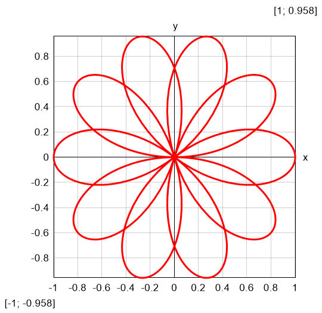
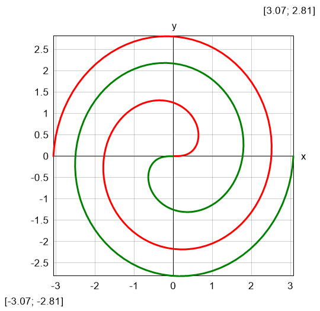
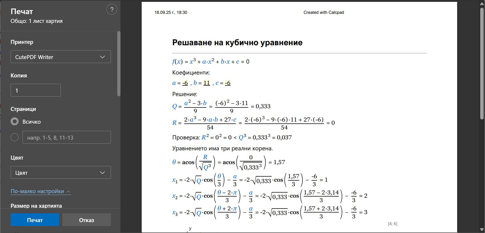

®
®- София, бул. Пейо К. Яворов 34-36
- +359 2 423 4455
- proektsoft.bg@gmail.com
 Calcpad
Calcpad
Версия 7.1 Readme!
Относно Calcpad VM
Calcpad е безплатен софтуер за математически и инженерни изчисления. Представлява гъвкав и модерен програмируем калкулатор + генератор на Html документация. Той е лесен за ползване и предлага богати възможности:
- изчисления с реални и комплексни числа;
- използване на мерни единици в изчисленията (SI, Imperial и USCS);
- вектори и матрици: правоъгълна, симетрична, матрица-стълб, диагонална, горна/долна триъгълна;
- дефиниране на собствени променливи и потребителски мерни единици;
- библиотека от стандартни математически функции;
-
множество векторни и матрични функции:
- за данни: търсене, броене, сортиране, подреждане, справки и др.;
- агрегатни: минимум, максимум, сума, сума от квадр., ККСК, средно аритметично, произведение, средно геометрично и др.;
- математически: норми, числа на обусловеност, детерминанта, ранг, следа, транспонирана, адюнгирана и обратна матрица, факторизация (Холецки, ldlt, lu, qr и svd), собствени стойности и вектори, системи линейни уравнения;
- дефиниране на потребителски функции с множество параметри f(x; y; z; …);
- мощни числени методи за намиране на корени на уравнения, екстремуми на функции, числено интегриране и диференциране;
- крайни суми, произведения и итерации;
- изчертаване на графики на функции;
- модули, макроси и текстови променливи;
- контрол на програмния поток чрез условни разклонения и цикли;
- "заглавия" и 'текстови' коментари, заградени в кавички;
- поддръжка на Html и CSS в коментарите за по-богато форматиране;
- вмъкване на изображения, таблици, параметрични SVG чертежи и др.;
- генериране на Html форми за попълване на входни данни;
- автоматично документиране на резултатите в Html записки, готови за отпечатване;
- заместване на стойностите на променливите и интелигентно закръгляване;
- контрол на видимостта на резултатите и сгъване на съдържанието;
- запис на данните в текстов (*.txt, *.cpd) и двоичен (*.cpdz) файлов формат;
- запис на резултатите в (*.html) или (*.docx) файл за Word.
Софтуерът е разработен с помощта на програмен език C# и последните компютърни технологии. Той разпознава автоматично въведените математически формули, замества стойностите на променливите, изчислява изразите и показва резултатите на екрана. Те са оформени като професионално изглеждаща Html записка, във вид, подходящ за преглед и отпечатване.
Референции: Всички тези нови и красиви икони в последните версии са създадени с помощта на платформата icons8.com.
За кого е предназначен?
Софтуерът е подходящ за инженери и други специалисти, които трябва да извършват еднотипни и често повтарящи се изчисления, особено когато резултатите трябва да се представят в официална документация, като например изчислителна записка. Те могат ефективно да автоматизират тези задачи, чрез създаването на мощни и надеждни Calcpad приложения. Платформата може да е полезна и на преподавателите за разработването на интерактивни примери, статии, ръководства, учебници и др. Учащите могат да го използват за решаване на различни задачи, подготовка на домашни, курсови, дипломни работи или дисертации.
Инсталиране
Инсталирането се извършва от автоматизирана инсталираща програма calcpad-setup-x64.exe. Следвайте инструкциите, които ще видите на всяка стъпка. За да може да ползвате софтуера, трябва да изтеглите и инсталирате Microsoft .NET 8.0. Ако разполагате с по-стара версия на Windows, най-вероятно ще се наложи да го изтеглите и инсталирате.
Тази версия няма да работи на 32-битови компютри. За целта трябва да инсталирате съответно
calcpad-setup-x86.exe и .NET Framework 4.6.
Лицензиране и условия за ползване
Софтуерът е безплатен както за лична, така и за комерсиална употреба при определени условия. Може да инсталирате и разпространявате копия от софтуера без ограничения. Всички подпрограми, разработени с Calcpad са собственост на техните автори. Те могат да се използват също без ограничения, освен посочените от съответните автори.
Как работи?
Софтуерът е бърз и лесен за използване. Следвайте следните прости стъпки:
- Въведете формулите и текста в прозореца "Код" отляво. Вижте инструкциите по-долу.
- Натиснете F5 или бутона
 за да изчислите резултатите. Те ще се появят отдясно в прозореца "Резултати", като професионално оформена изчислителна записка.
за да изчислите резултатите. Те ще се появят отдясно в прозореца "Резултати", като професионално оформена изчислителна записка. - Натиснете
 за да отпечатате или
за да отпечатате или  за да копирате съдържанието на записката. Може също да го запишете като Html
за да копирате съдържанието на записката. Може също да го запишете като Html  , PDF
, PDF  или MS Word
или MS Word  документ.
документ.
Може да ползвате програмата в два отделни режима:
- Програмиране - програмния код е достъпен за преглед и редактиране в левия прозорец. След изчисленията, резултатите се показват в десния прозорец. Този режим се прилага най вече при разработване, но ако имате прости и кратки задачи без специално форматиране, може да ги ползвате и по този начин.
- Формуляр за входни данни - изходният код е недостъпен, а вместо това, се показва Html формуляр за вход на данни. Той съдържа входни полета за всички параметри, които е необходимо да се въведат за целите на изчисленията. Останалата част от съдържанието е заключена за редактиране. Този режим е подходящ за работа със сложни и често използвани задачи, с богато форматиране. При него, входните параметри се разпознават лесно, а програмният код е защитен от случайно повреждане.
В режим "Формуляр" трябва първо да попълните входните полета, след което да натиснете бутона  за да изчислите. Може да създадете формуляр директно от програмния код по много лесен начин. Просто трябва да сложите символа "?" навсякъде, където е необходимо да се попълни стойност. След това запишете задачата като "*.cpd" файл. Допълнителна информация ще намерите по-нататък в настоящото ръководство.
за да изчислите. Може да създадете формуляр директно от програмния код по много лесен начин. Просто трябва да сложите символа "?" навсякъде, където е необходимо да се попълни стойност. След това запишете задачата като "*.cpd" файл. Допълнителна информация ще намерите по-нататък в настоящото ръководство.
Теоретични основи
(това може и да не го четете)
Как на практика работи Calcpad? В основата му стои математическо ядро, което отговаря за разпознаването и изчисляването на формулите. Първоначално, програмният код се разглежда като поток от символи. Прави се лексически анализ и се превръща в поток от лексеми (токени). Всяка лексема е представена с нейното съдържание и етикет (мета информация) относно тип и пр.
След това се проверява дали лексемите се намират в правилната последователност. Целта е да се установи дали изразът е дефиниран математически коректно и може да бъде изчислен. В противен случай, програмата ще генерира съобщение за грешка. Например, изразът "3 + a / 5" е коректен, а изразът "3 a + / 5" не е. За тази цел, стандартно използваната математическа нотация се разглежда като формален език с контекстно свободна граматика. Разпознаването се извършва чрез синтактичен анализ, с помощта на стеков автомат.
Математическите изрази стандартно се записват в инфиксен формат. Това означава, че всеки оператор е разположен между съответните операнди (например "5*3 + 2"). Проблемът е, че на компютрите им е трудно да "разбират" този вид запис, за разлика от хората. Основните трудности са свързани с необходимостта от отчитането на приоритет и асоциативност на операторите и наличието на скоби. Например, резултатът от горния израз ще бъде "17", докато "5*(3 + 2)" ще даде "25". Ето защо е необходимо изразът да се преобразува в друг вид запис, наречен постфиксен или обратен полски запис (RPN). За компютрите този запис вече е лесно разбираем, но не и за хората. Например, изразът "5*(3 + 2)" се записва в RPN като "5 3 2 + *". Предимството на този формат е, че последователността на операциите е ясно дефинирана и без необходимост от скоби.
Съществува прост и ефективен алгоритъм за изчисляването на израз, представен в обратен полски запис (RPN). Той се използва в почти всички калкулатори. Освен това, езикът на Calcpad включва и допълнителен набор от елементи и сложна програмна функционалност за обработването на променливи, функции, условни разклонения, цикли, числени методи и др.
Това е краткото и просто обяснение. Ако имате по-сериозен интерес към тази тема, може да намерите допълнителна информация в специализираната литература, статии и уеб сайтове. Wikipedia е едно добро място за начало:
https://en.wikipedia.org/wiki/Parsing
https://en.wikipedia.org/wiki/Lexical_analysis
https://en.wikipedia.org/wiki/Context-free_grammar
https://en.wikipedia.org/wiki/Shunting-yard_algorithm
https://en.wikipedia.org/wiki/Reverse_Polish_notation
Писане на текст
Програмният код се въвежда като текст в прозореца "Код", обикновено с помощта на клавиатурата. Разстоянията между символите и отместването в началото на реда се управляват автоматично от редактора. Може да копирате текст от и към текстовия прозорец или външна програма като например Word. Над прозореца има лента с бутони, които предлагат някои полезни команди за редактиране: Копиране, Вмъкване, Отмяна и др. Възможни са и други начини за добавяне на код в програмата:
- от калкулаторната клавиатура в долната част на екрана;
- от менюто "Вмъкни" в горната част на екрана;
- от помощната информация в десния прозорец. За да вмъкнете елемент, кликнете върху него с мишката.
Програмният код е логически разделен на редове, които се номерират автоматично. По принцип, всеки израз трябва да е на отделен ред. Възможно е да имате и няколко израза на един ред, но трябва да ги разделите с коментари. Когато приключите с текущия ред, натиснете "Enter" за да преминете на нов ред. В този момент се извършва синтактично проверка и оцветяване на въведения код. При това, различните програмни елементи се показват в различни цветове. Например, коментарите са в зелено, променливите в синьо, съобщенията за грешки - в червено и пр. Всички коментари трябва да са заградени в кавички. Те могат да съдържат както обикновен текст, така и Html. С негова помощ може да добавяте картинки, таблици и по-богато форматиране към изчислителната записка.
Калкулаторна клавиатура
Калкулаторната клавиатура е удобна за работа с таблет или лаптоп, с чувствителен на допир екран. При натискане на бутон от клавиатурата, съответните символи се добавят след текущото място на курсора. Клавиатурата е разделена на четири визуални групи: "Числа", "Оператори", "Функции" и "други". Бутонът "=" не изчислява резултата, както при стандартните калкулатори, а е оператор за присвояване (например "a = 4"). За сравняване на стойности се използва оператора "≡" (например, "a ≡ b" е равносилно на: "a равно ли е на b?"). Бутоните "e", "π" и "g" вмъкват съответните вградени константи e ≈ 2.7183, π ≈ 3.1416 и g ≈ 9.8066.
Ако калкулаторната клавиатура не ви е необходима в даден момент, може да я скриете от бутона  за да освободите място. Натиснете същия бутон повторно за да я върнете обратно.
за да освободите място. Натиснете същия бутон повторно за да я върнете обратно.
Бутонът "C" изтрива предишния символ, а "AC" изтрива текущия ред. С двойно кликване на същия бутон може да изтриете цялото съдържание. В случай, че това стане инцидентно, може да възстановите текста с бутона  .
.
Придвижване в текста
Писането и редактирането на текст в Calcpad не се различава особено от която е да е друга програма под Windows. Ако вече имате известен опит с това, може да пропуснете следващите 6 точки и да отидете направо на "Помощни инструменти"
Може да пишете на произволно място в целия текст. Текущата позиция, където се вмъкват символите се нарича "текстов курсор" (мигаща вертикална черта "|"). Може да смените позицията на курсора, като кликнете с мишката на желаното място в текста или използвате стрелките "← → ↑ ↓" от клавиатурата. Те преместват курсора с по един символ, съответно наляво/надясно или с един ред нагоре/надолу. Ако задържите клавиша "Ctrl", натискането на стрелка ще премести курсора с цяла дума. С клавиша "Home" ще отидете в началото на реда, а със "End" - в края. Ако преди това задържите "Ctrl", вместо това, ще отидете в началото и края на целия текст.
Маркиране на текст
Повечето от командите за редактиране изискват да маркирате предварително част от текста, към която да бъде приложена съответната команда. Маркираният текст обикновено се обозначава със син фон (може и да изглежда различно в зависимост от настройките на конкретния компютър). Може да маркирате текст с помощта на мишката по следният начин: Натиснете левия бутон на мишката в началото на текста, който ще маркирате. Преместете мишката в крайната позиция като държите бутона натиснат. След това може да го пуснете. Като алтернатива, може да кликнете в началото, да натиснете Shift и да кликнете отново в края. Също така, може да използвате и клавиатурата на компютъра. Задръжте Shift и натиснете стрелка или "Home", "End", "PageUp", "PageDown".
Изтриване на текст
Може да изтриете единичен символ, като натиснете клавиша "Delete" ("Del") или "Backspace" ("Bkspc"). Разликата е, че "Delete" изтрива символа след курсора, а "Backspace" - преди курсора. Ако преди това задържите "Ctrl", вместо отделни символи може да триете наведнъж цели думи. Ако е необходимо да изтриете по-голяма част от текста, може да я маркирате предварително и тогава да натиснете "Delete" или "Backspace".
Копиране
Ако имате повтарящи се части от текста, може да ги копирате, вместо да ги набирате повторно. Това става на две стъпки: "Копиране" и "Поставяне". На първата стъпка, маркираният текст се изпраща временно в част от паметта, наречена "Clipboard". На втората стъпка, може да поставите текста от клипборда на друго място. Веднъж копиран, текстът може да бъде поставян многократно на различни места.
Може да копирате маркирания текст в клипборд-а като натиснете "Ctrl+C" или кликнете бутона  .
.
Вмъкване
Преди да поставите текст от клипборд-а позиционирайте курсора на желаното място. След това натиснете "Ctrl+V" или бутона . Може да копирате текст от Calcpad и да го поставите в други програми и обратно. Например, може да вземете формули от Word, да ги изчислите в Calcpad и да върнете резултатите обратно в Word.
Отмяна
Тази команда отменя резултата от последната команда за редактиране на текста и възстановява предишното положение. Трябва само да натиснете "Ctrl+Z" или бутона  . Така може да се връщате последователно до 10 стъпки назад.
. Така може да се връщате последователно до 10 стъпки назад.
Възстановяване
Действието е обратното на предишната команда. Възстановява последната отменена команда за редактиране. Възстановяването трябва да бъде извикано непосредствено преди отмяната. Ако междувременно извършите въвеждане или редактиране на текста, губите възможността за възстановяване. За да стартирате командата, натиснете бутона .
Търсене
Може да търсите даден текстов низ в програмния код и да го замените с друг. Изберете менюто "Редактор/Търсене", кликнете бутона или натиснете "Ctrl+F". На екрана ще се покаже диалогът "Търсене и заместване".
Въвете думата или фразата, която търсите и натиснете "Намери следващ". Програмата започва от текущата позиция и търси следващото съвпадение в избраната посока. Когато намери търсената фраза, маркира съответния текст и спира търсенето. За да потърсите следващото съвпадение, натиснете "Намери следващ" отново. Вместо това, може да използвате и клавиша "F3", дори и след като затворите диалога.
Ако желаете да замените търсения текст, изберете раздела "Заместване" и попълнете полето "Замени със:". След това, натиснете бутона "Замени". Програмата ще замени текущото съвпадение и ще премине автоматично към следващото. Ако желаете да замените всички съвпадения в кода, натиснете съответния бутон.
Предвидени са няколко настройки, които казват влияние върху резултатите от търсенето, както следва:
- Посока: "Нагоре", "Надолу" and "Всичко". И двете опции "Надолу" и "Всичко" търсят в посока към края на съдържанието. Разликата при "Всичко" е, че когато достигне края на текста, програмата се връща и започва отначало.
- В избраното: Тази опция е предназначена само за командата "Замени всичко". Първо трябва да маркирате текста и тогава да извикате диалога "Търсене и заместване". Ако включите опцията "В избраното" след това, всички замени ще бъдат направени само в маркирания текст.
- Главни/малки (букви): Когато опцията е включена, програмата ще прави разлика между главни и малки букви. По подразбиране, регистърът на буквите при търсене се пренебрегва.
- Цели думи: Когато тази опция е избрана програмата ще търси само последователности, които представляват цели думи.
Помощни инструменти
Синтактично оцветяване
Синтактичното оцветяване се изразява в прилагането на различно оцветяване на отделните компоненти на програмния език: функции, променливи, оператори и др. То се стартира във фонов режим, всеки път, когато редктираме текущия ред и отидем на друг. Грешките се оцветяват в червено. Програмата различава недефинирани и дефинирани променливи и функции. Цветовата гама е предефинирана и не може да се променя. Към настоящия момент, Calcpad не поддържа потребителски стилове и теми.
Автоматични остъпи
Отстъпите на отделните редове в кода се управляват автоматично от програмата. Всички редове, които са в условен блок или цикъл получават съответния отстъп навътре. В допълнение, може да въвеждате и интервали в началото на всеки ред. Въпреки, че интервалите също се настройват автоматично, това не засяга водещите интервали в началото на реда.
Авто-дописване
Когато започнете да пишете, програмата показва падащ списък с предложения, които започват с въведените до момента символи. Той съдържа ключови думи, мерни единици, вградени функции, както и всички променливи и функции, дефинирани от потребителя преди текущия ред. Списъкът се филтрира и сортира динамично по време на писане. Текущото предложение от списъка стои винаги маркирано. За да го вмъкнете на текущата позиция, натиснете "Tab". За да изберете някое от другите предложение в списъка, кликнете върху него с мишката. Алтернативно, може да натиснете "долна стрелка", за да се придвижите в списъка и "Enter" за да вмъкнете избрания елемент. Ако списъкът се намира над текущия ред, натиснете "горна стрелка", вместо долна.
Съответствие на скобите
Програмата разпознава и маркира съответните леви и десни скоби по време на писане. Ако поставите курсора непосредствено до дадена скоба, тя се оцветява, заедно със съответната. Ако няма такава, не се оцветява нищо.
Гръцки букви
Може да вмъквате гръцки букви, като кликнете върху съответния символ под прозореца за редактиране на код. Алтернативно, може да въведете еквивалентната буква на латиница, съгласно долната таблица, и да натиснете "Ctrl+G". При повторно натискане, ще конвертирате символа обратно от гръцки на латиница. Тъй като "j"/"J" и "V" остават неизползвани, те са привързани съответно към символите "ø"/"Ø" и "∡".
| Име | гръцки | латиница | Гръцки | Латиница |
|---|---|---|---|---|
| алфа | α | a | Α | A |
| бета | β | b | Β | B |
| гама | γ | g | Γ | G |
| делта | δ | d | Δ | D |
| епсилон | ε | e | Ε | E |
| зета | ζ | z | Ζ | Z |
| ета | η | h | Η | H |
| тита | θ | q | Θ | Q |
| тита-алт. | ϑ | v | ∡ | V |
| йота | ι | i | Ι | I |
| капа | κ | k | Κ | K |
| ламда | λ | l | Λ | L |
| мю | μ | m | Μ | M |
| ни | ν | n | Ν | N |
| кси | ξ | x | Ξ | X |
| омикрон | ο | o | Ο | O |
| пи | π | p | Π | P |
| ро | ρ | r | Ρ | R |
| сигма | σ | s | Σ | S |
| тау | τ | t | Τ | T |
| упсилон | υ | u | Υ | U |
| фи | φ | f | Φ | F |
| чи | χ | c | Χ | C |
| пси | ψ | y | Ψ | Y |
| омега | ω | w | Ω | W |
| фи-диам. | ø | j | Ø | J |
Редактиране с Notepad++
Notepad++ е популярна безплатна програма за редактиране на текстови файлове. Тя е с отворен код и може да бъде изтеглена от сайта https://notepad-plus-plus.org. Поддържа синтаксиса на много програмни езици и скриптове. Оцветява ключовите думи, сгъва блокове от изрази и показва затварянето на скобите. Частично е преведена и на български език. Може да я използвате за да редактирате Html файлове. Синтаксисът на Calcpad е дефиниран като файл с настройки, който може да вмъкнете в Notepad++. Това става като стартирате Notepad++, изберете менюто "Language" ("Синтаксис") -> "Define your language" и натиснете бутона "Import…". Намерете папката на Calcpad в Program Files или където е инсталиран и изберете файла Calcpad-syntax-for-Notepad++.xml.
Изрази
Calcpad е предназначена най-вече за извършване на изчисления. Затова всичко, което въведете в текстовия прозорец, по подразбиране се счита за аритметичен израз, освен ако не е в кавички. Тогава се счита за коментар. По правило всеки израз трябва да е разположен на нов ред:
2 + 35*(3+1)15/2
Не трябва да завършвате всеки израз с "=" за получите резултата. Това е символът за присвояване и служи за задаване на стойности на променливи, например "a = 2". За изчислите, натиснете F5 бутона  . След това, в прозореца с резултати ще може да видите:
. След това, в прозореца с резултати ще може да видите:
2 + 3 = 55∙(3 + 1) = 2015/2 = 7.5
По изключение, може да имате няколко израза на един ред, разделени с коментари:
'Дължина - ' a = 3 ' m, Ширина - ' b = 2*a ' m, Височина - ' c = 5 ' m
Изразите могат да включват константи, променливи, оператори, функции и скоби. Те трябва да са в правилната последователност за да образуват валиден израз. Използва се общоприетата математическа нотация и приоритет на операциите, които се изучават в училище. Подробно описание на отделните елементи, които може да използвате в изрази, е дадено по-долу.
Може да въвеждате отделни изрази, които да се изчисляват, или да съставите цялостна програма за решаване на задачата. За целта, може последователно да дефинирате параметри, на които да присвоявате стойности. След това, може да ги използвате в други формули, чрез които да изчислите нови параметри и така, до получаване на отговора. Чрез подходяща комбинация от изрази, коментари, схеми и малко Html, може да съставите професионална и прегледна програма-записка. Може да я запишете във файл и да я ползвате многократно. Ето една примерна задача за намиране на корените на квадратно уравнение:
Константи
Реални
Константите могат да бъдат положителни или отрицателни цели числа, или десетични дроби. Те трябва да включват цифрите "0" - "9" и "." за десетична точка. Може да въведете и обикновена дроб като "3/4", но програмата на практика ще я третира като израз от две константи и оператор "/". Не може да въвеждате числа с плаваща запетая във формат "3.4e+6". Вместо това, може да използвате израза: "3.4*10^6".
Всички константи и променливи се съхраняват в поле тип double-precision floating point. Те могат да имат стойности от -1.7976931348623157E+308 до 1.7976931348623157E+308. Най-малкото положително число може да бъде 4.94065645841247E-324. По-малки стойности от тази се считат за точно 0. Ако получените резултати излизат извън посочените граници, програмата връща съответно "-∞" и "+∞". Същото се получава и при деление на нула, а "0/0" = "Недефинирано".
Комплексни
Ако включите режим "Комплексни числа", ще може да ги използвате в програмата. Комплексното число представлява наредена двойка (a; bi) , където "a" се нарича реално число, а "bi" - имагинерно. Комплексите числа, най-често се записват в алгебрична форма като "±a ± bi" (например "2 + 3i"). Може да използвате и тригонометрична и експоненциална форма като въведете съответните изрази: "r·(cos(φ) + 1i·sin(φ))" и "r·e1i·φ". Имагинерната единица може да се запише самостоятелно като "1i", за да се отличава от променливата "i". Тя представлява специално число, което се дефинира с израза "(1i)2 = -1".
Променливи
Променливите се дефинират чрез посочване на име и стойност, например "a = 4". Символът "=" е оператор за присвояване. От лявата му страна трябва да има единствено име на променлива, а от дясната може да стои всякакъв валиден аритметичен израз, например "b = a + 4". След като веднъж е дефинирана, променливата може да се използва в други изрази по-нататък. При всяко нейно срещане в процеса на изчисляване, тя ще се замести с нейната стойност. Не може да използвате променлива, преди да е дефинирана. Това ще доведе до грешка. Всяка променлива е валидна от момента на нейното създаване до края на задачата. Ако я дефинирате повторно, новата стойност ще замени старата.
Имената на променливите могат да съдържат малки и главни букви на латиница "a" - "z", "A" - "Z", гръцки букви "α" - "ω", "Α" - "Ω" и цифри. Прави се разлика между главни и малки букви. Например "a" и "A" са различни променливи. Името не може да започва с цифра. Може да използвате и символа "_" (долна черта). Първата долна черта се счита за начало на долен индекс. Например "a_1_1" ще бъде форматирано като "a1_1". В имената на променливите може да вмъквате и запетаи "," и други символи: " ′ ", " ″ ", " ‴ ", " ⁗ ", " ø ", "Ø", " ° ", "∡"., например "f′_c,eff". В променливите могат да съхраняват както реални, така и комплексни числа.
Оператори
Програмата поддържа следните оператори:
-
Аритметични:
- "
!" - факториел; - "
^" - степенуване; - "
/" - деление; - "
÷" - деление с дробна черта; - "
\" - целочислено деление; - "
⦼" - остатък; - "
*" - умножение; - "
-" - изваждане; - "
+" - събиране;
- "
-
Релационни (сравнение):
- "
≡" - равно на; - "
≠" - различно от; - "
<" - по-малко; - "
>" - по-голямо; - "
≤" - по-малко или равно; - "
≥" - по-голямо или равно;
- "
-
Логически:
- "
∧" - логическо "И" (AND);
- "
∨" - логическо "ИЛИ" (OR);
- "
⊕" - изключващо "ИЛИ" (XOR);
- "
- "
=" - присвояване.
"Бързи" клавиши за оператори
Символите за изписване на някои от операторите не са налични на стандартните клавиатури. По тази причина, вместо "≡", "≠", "≤"- and "≥", може да използвате съответните еквиваленти от езика C/C++, както следва: "==", "!=", "<=" и ">=". Те ще бъдат автоматично заменени с техните аналози в Calcpad. Съкращението “%%” ще бъде конвертирано до оператора за остатък “⦼”. Това се налага, тъй като символът “%” се използва като мерни единици за "процент". Тъй като избраният символ не е широко разпространен,в записката той се замества с “mod”, например “7 mod 5 = 2”, вместо “7 ⦼ 5 = 2”.
Унарни и бинарни операции и оператори
Унарни са операциите, които се извършват върху един операнд, а бинарни - върху два операнда. Например, операцията "-a" е унарна, а "a - b" - бинарна. Това се отнася и за съответните оператори. Всички оператори в Calcpad са бинарни, с изключение на оператора "!" (факториел), който е унарен и "-" който може да бъде както унарен (отрицателен знак), така и бинарен (изваждане). На свой ред, унарните оператори могат да бъдат префиксни и постфиксни. Префиксните се записват преди операнда, а постфиксните - след него. Операторът "-" е префиксен, а "!" - постфиксен.
Приоритет на операторите
Последователността, в която са изброени операторите по-горе съответства на техния приоритет. Това е реда, в който ще се извършат съответните операции в даден аритметичен израз (освен, ако няма скоби). Тоест, първо ще се извърши степенуване, след това умножение и деление, събиране и изваждане, сравнение, и накрая - присвояване. Всички релационни оператори са с равен приоритет. За да промените последователността на операциите, може да използвате скоби. Например, "5 + 2∙3" прави "11", тъй като умножението е с по-висок приоритет. Ако искате да извършите първо събирането, напишете "(5 + 2)∙3" и ще получите "7∙3 = 21".
Асоциативност
Знаем, че когато имаме няколко оператора с равен приоритет, операциите се извършат отляво-надясно. Това свойство се нарича (лява) асоциативност. Например, "3 - 2 + 1" прави "(3 - 2) + 1 = 2", а не "3 - (2 + 1) = 0". Друг добър пример е "2∙3 / 2∙3", което прави "9", а не "1". Всички оператори в Calcpad са ляво асоциативни (операциите се извършват отляво надясно), с изключение на оператора за степенуване.
Особености на оператора за степенуване
Степенуването по принцип е дясно асоциативна операция и се извършва отдясно-наляво. Тоест, "x^a^b" трябва да се чете като "xab". Много ръчни калкулатори обаче, както и някои електронни таблици като Excel, не работят така. При тях, "x^a^b" се чете като "(xa)b". Ако искате да получите "xab", трябва да поставите скоби: "x^(a^b)". За разлика от Excel обаче, в Calcpad се използват общоприетите правила. Например, ако напишете "4^3^2", ще получите "432 = 262144", а не "(43)2 = 4096". Така са направени и повечето математически програми като Wolfram Mathematica, Maple, Mathlab и др.
Друга особеност има, когато използваме "-" (отрицателен знак), в комбинация със степенуване. В повечето програмни езици, унарните оператори са с приоритет пред бинарните, но този случай е изключение. В математиката, "-22" е прието да се чете като "-(22) = -4". Така работи и Calcpad: "-2^2 = -(22) = -4" (както и повечето математически програми). В електронните таблици като Excel обаче, по някаква причина е прието обратното: "-2^2 = (-2)2 = 4".
Релационни изрази
Релационните оператори могат да връщат само две стойности: "1" - истина и "0" - неистина. Те могат да участват и в по-сложни изрази. Например, за да получите по-голямото от "a" и "b", може да използвате израза "a*(a ≥ b) + b*(a < b)". Трябва обаче да бъдете внимателни. Например, ако вместо "<" използвате "≤", при "a" точно равно на "b", ще получите "2∙a". Вместо това, е по-добре да използвате вградената функция "max(a; b)", логически оператори или условно изпълнение (виж по-нататък). Алгебричните оператори са с по-висок приоритет от релационните, като и двата вида се изчисляват преди логическите.
Логически изрази
Calcpad оперира единствено с числови типове данни и няма специален тип за логически данни. Поради това, подобно на релационните, логическите оператори също използват "1" за "истина" и "0" for "неистина". Всяка стойност, различна от 0 също се приравнява към "истина". В Calcpad може да изграждате логически изрази като използвате логически оператори и/или логически функции (виж по-нататък в настоящото ръководство). Те работят по следния начин:
- "∧" (and) връща 1 ако и двата операнда са едновременно равни на 1, иначе връща 0;
- "∨" (or) връща 1 ако поне един от операндите е 1 и 0 ако и двата са 0;
- "⊕" (xor) връща 1 ако само един от операторите е равен на 1 и 0 в останалите случаи.
Резултатите действието на горните оператори са дадени в следните таблици:
|
And
|
Or
|
Xor
|
Аритметични изрази с комплексни числа
Всички оператори поддържат и комплексни числа, с изключение на тези за целочислено деление "\", остатък "⦼" и сравняване: "<", "≤", ">", "≥". Изчисляването на изрази с комплексни числа се извършва малко по-сложно отколкото се реални. Ето правилата за основните аритметични операции:
- Събиране:
(a + bi) + (c + di) = (a + c) + (b + d)i; - Изваждане:
(a + bi) − (c + di) = (a − c) + (b − d)i; - Умножение:
(a + bi)·(c + di) = (ac − bd) + (bc + ad)i; - Деление:
(a + bi)/(c + di) = (ac + bd)/(c2 + d2) + (bc − ad)/(c2 + d2)i;
Аритметични изрази с мерни единици
Всички оператори могат да се прилагат и към стойности с дименсии, както и към самите мерни единици. Умножението, делението и степенуването на мерни единици са с по-висок приоритет от съответните оператори за бездименсионни стойности. Така, може да образуваме съставни мерни единици чрез аритметични изрази. За повече информация, виж раздел Мерни единици по-долу.
Скоби
Скобите служат за две цели: едната е промяна на последователността на операциите, а другата е да заграждат аргументите на функциите. Трябва да използвате означенията "(", ")". Програмата следи за спазването на следните правила:
- Първата срещната скоба в израза трябва да е лява;
- Броят на левите и десните скоби трябва да е равен;
- Преди лява скоба трябва да има оператор или име на функция;
- Не може да има дясна скоба след оператор или име на функция;
- След име на функция трябва винаги да има лява скоба.
Скоби в резултатите
При форматиране на изходните резултати, програмата поставя скобите "умно". Това означава, че скоби, които се дублират или по никакъв начин не променят реда на операциите, се премахват. От друга страна, на определени места се налага да се добавят скоби, въпреки че липсват във изходния код. Това се получава най-често при заместване на стойностите на променливи, които съдържат в себе си отрицателни или комплексни числа. Например:
- Ако "
a = -2", то "a2 = (-2)2 = 4", а не "a2 = -22". Във втория случай, обикновено се счита, че минусът е след повдигането в степен и резултатът би трябвало да е -4. Скоби се добавят и при степенуване на комплексно число; - Ако "
a = -2", то "b = -a = -(-2) = 2", а не "b = -a = --2 = 2"; - Скоба се поставя и когато умножаваме или делим на отрицателно число: "
a·b = -2·(-3) = 6"; - Ако имаме променливи с комплексни стойности, след заместването им също се поставят скоби: "
a·b = (2 + 3i)·(3 - 2i) = 12 + 5i".
Функции
Библиотечни
Calcpad разполага с набор от стандартни библиотечни функции, които може да ползвате директно:
-
Тригонометрични:
sin(x)- синус;cos(x)- косинус;tan(x)- тангенс =sin(x)/cos(x), за ∀ x ≠ π/2 + kπ, k=1, 2, 3…;csc(x)- косеканс =1/sin(x), за ∀ x ≠ kπ, k=1, 2, 3…;sec(x)- секанс =1/cos(x), за ∀ x ≠ π/2 + kπ, k=1, 2, 3…;cot(x)- котангенс =cos(x)/sin(x), за ∀ x ≠ kπ, k=1, 2, 3…;
-
Хиперболични:
sinh(x)- синус хиперболичен =(ex - e-x)/2;cosh(x)- косинус хиперболичен =(ex + e-x)/2;tanh(x)- тангенс хиперболичен =(ex - e-x)/(ex + e-x);csch(x)- косеканс хиперболичен =1/sinh(x);sech(x)- секанс хиперболичен =1/cosh(x);coth(x)- котангенс хиперболичен =(ex + e-x)/(ex - e-x), за x ≠ 0;
-
Обратни тригонометрични:
asin(x)- аркуссинус, дефиниран за -1 ≤ x ≤ 1;acos(x)- аркускосинус, дефиниран за -1 ≤ x ≤ 1;atan(x)- аркустангенс;atan2(x; y)- ъгълът, чиито тангенс е отношението на y към x;acsc(x)- аркускосеканс =asin(1/x);asec(x)- аркуссеканс =acos(1/x);acot(x)- аркускотангенс =atan(1/x);
-
Обратни хиперболични:
asinh(x)- аркуссинус хиперболичен =ln(x + √x2 + 1), дефиниран за -∞ ≤ x ≤ +∞;acosh(x)- аркускосинус хиперболичен =ln(x + √x + 1·√x - 1), дефиниран за x ≥ 1;atanh(x)- аркустангенс хиперболичен =1/2·ln[(1 + x)/(1 - x)], за -1 < x < 1;acsch(x)- аркускосеканс хиперболичен =asinh(1/x);asech(x)- аркуссеканс хиперболичен =acosh(1/x);acoth(x)- аркускотангенс хиперболичен =1/2·ln[(x + 1)/(x - 1)], за |x| > 1;
-
Логаритмични, експоненциални и корени:
log(x)- десетичен логаритъм (при основа 10), за ∀ x > 0;ln(x)- натурален логаритъм (при основа e ≈ 2.7183), за ∀ x > 0;log_2(x)- двоичен логаритъм (при основа 2), за ∀ x > 0;exp(x)- експоненциална функция = e ˣ;sqr(x) или sqrt(x)- корен квадратен (√x ), дефиниран за ∀ x ≥ 0;cbrt(x)- корен кубичен ( 3√x );root(x; n)- корен n-ти ( n√x );
-
Закръгляване:
round(x)- закръглява към по-близкото цяло число;floor(x)- закръглява към по-малкото цяло число;ceiling(x)- закръглява към по-голямото цяло число;trunc(x)- закръглява към най-близкото цяло число в посока към нулата;
-
Целочислени:
mod(x; y)- остатък от деление;gcd(x; y; z…)- най-голям общ делител;lcm(x; y; z…)- най-малко общо кратно;
-
Агрегатни и интерполационни:
min(x; y; z…)- минимум на множество стойности;max(x; y; z…)- максимум на множество стойности;
sum(x; y; z…)- сума на множество стойности= x + y + z…;sumsq(x; y; z…)- сума от квадратите= x² + y² + z²…;srss(x; y; z…)- корен квадратен от сумата на квадратите= sqrt(x² + y² + z²…);average(x; y; z…)- средно аритметично от множество стойности= (x + y + z…)/n;product(x; y; z…)- произведение на множество стойности= x·y·z…;mean(x; y; z…)- средно геометрично= n-th root(x·y·z…);take(n; a; b; c…)- връща n-тия елемент от списъкаline(x; a; b; c…)- линейна интерполация;spline(x; a; b; c…)- spline интерполация на Ермит;
-
Условни и логически:
if(условие; стойност-при-истина; стойност-при-неистина)- условно изчисление. Ако условие е удовлетворено, функцията изчислява първата стойност, ако не е - втората. Условието се счита за удовлетворено, ако изчисления резултат е което и да е число, различно от нула.switch(<усл1>; <стойност1>; <усл2>; <стойност2>;…; <подразб.>)- избирателно изчисление;not(x)- логическо отрицание (NOT);and(x; y; z…)- логическо "И" (AND);or(x; y; z…)- логическо "ИЛИ" (OR);xor(x; y; z…)- изключващо "ИЛИ" (XOR);
-
Други:
sign(x)- знак на число = -1, if x < 0; 1, if x > 0; 0, if x = 0;abs(x)- абсолютна стойност (модул) |x|;random(x)- генерира (псевдо) случайно число между 0 и x;
-
Векторни:
-
Създаване и инициализация:
vector(n)- създава празен вектор с дължина n;fill(⃗v; x)- запълва вектора ⃗v със стойност x;range(x1; xn; s)- създава вектор от стойностите в интервала от x1 до xn със стъпка s;
-
Структурни:
len(⃗v)- връща дължината на вектора ⃗v;size(⃗v)- действителния размер на вектора ⃗v (индекса на последния ненулев елемент);resize(⃗v; n)- задава нова дължина n на вектора ⃗v;join(A; ⃗b; c…)- създава вектор чрез обединяване на аргументите в списъка - матрици, вектори и скалари;slice(⃗v; i1; i2)- връща частта от вектора ⃗v, ограничена от индекси i1 и i2, включително;first(⃗v; n)- първите n елемента на вектора ⃗v;last(⃗v; n)- последните n елемента на вектора ⃗v;extract(⃗v; ⃗i)- извлича онези елементи от ⃗v, чиито индекси се съдържат в ⃗i;
-
Данни:
sort(⃗v)- сортира елементите на вектор ⃗v във възходящ ред;rsort(⃗v)- сортира елементите на вектор ⃗v в низходящ ред;order(⃗v)- индексите на вектор ⃗v, подредени по възходящия ред на неговите елементи;revorder(⃗v)- индексите на вектор ⃗v, подредени по низходящия ред на неговите елементи;reverse(⃗v)- нов вектор, съдържащ елементите на ⃗v в обратен ред;count(⃗v; x; i)- броя на елементите в ⃗v от i-тия нататък, които са равни на x;search(⃗v; x; i)- индекса на първия елемент в ⃗v от i-тия нататък, който е равен на x;find(⃗v; x; i)илиfind_eq(⃗v; x; i)- индексите на всички елементи в ⃗v от i-тия нататък, които са = x;find_ne(⃗v; x; i)- индексите на всички елементи в ⃗v от i-тия нататък, които са ≠ x;find_lt(⃗v; x; i)- индексите на всички елементи в ⃗v от i-тия нататък, които са < x;find_le(⃗v; x; i)- индексите на всички елементи в ⃗v от i-тия нататък, които са ≤ x;find_gt(⃗v; x; i)- индексите на всички елементи в ⃗v от i-тия нататък, които са > x;find_ge(⃗v; x; i)- индексите на всички елементи в ⃗v от i-тия нататък, които са ≥ x;lookup(⃗a; ⃗b; x)илиlookup_eq(⃗a; ⃗b; x)- всички елементи в ⃗a, за които съответните елементи в ⃗b са = x;lookup_ne(⃗a; ⃗b; x)- всички елементи в ⃗a, за които съответните елементи в ⃗b са ≠ x;lookup_lt(⃗a; ⃗b; x)- всички елементи в ⃗a, за които съответните елементи в ⃗b са < x;lookup_le(⃗a; ⃗b; x)- всички елементи в ⃗a, за които съответните елементи в ⃗b са ≤ x;lookup_gt(⃗a; ⃗b; x)- всички елементи в ⃗a, за които съответните елементи в ⃗b са > x;lookup_ge(⃗a; ⃗b; x)- всички елементи в ⃗a, за които съответните елементи в ⃗b са ≥ x;
-
Математически:
norm_1(⃗v)- L1 (Манхатън) норма на вектора ⃗v;norm(⃗v)илиnorm_2(⃗v)илиnorm_e(⃗v)- L2 (Евклидова) норма на вектора ⃗v;norm_p(⃗v; p)- Lp норма на вектора ⃗v;norm_i(⃗v)- L∞ (безкрайна) норма на вектора ⃗v;unit(⃗v)- нормализирания (единичен) вектор ⃗v (с L2 норма = 1);dot(⃗a; ⃗b)- скаларно произведение на два вектора ⃗a и ⃗b;cross(⃗a; ⃗b)- векторно произведение на два вектора ⃗a и ⃗b (с дължина 2 или 3);
-
Създаване и инициализация:
-
Матрични:
-
Създаване и инициализация:
matrix(m; n)- създава празна матрица с размери m⨯n;identity(n)- създава единична матрица с размери n⨯n;diagonal(n; d)- създава диагонална n⨯n матрица и запълва главния диагонал със стойност d;column(m; c)- създава матрица - стълб с размери m⨯1, запълнена със стойност c;utriang(n)- създава горна триъгълна матрица с размери n⨯n;ltriang(n)- създава долна триъгълна матрица с размери n⨯n;symmetric(n)- създава симетрична матрица с размери n⨯n;vec2diag(⃗v)- създава диагонална матрица от елементите на вектора ⃗v;vec2col(⃗v)- създава матрица-стълб от елементите на вектора ⃗v;join_cols(⃗c1; ⃗c2; ⃗c3…)- създава нова матрица чрез обединяване на вектори в стълбове;join_rows(⃗r1; ⃗r2; ⃗r3…)- създава нова матрица чрез обединяване на вектори в редове;augment(A; ⃗b; c…)- създава нова матрица чрез присъединяване на матриците A, B, C… една до друга;stack(A; ⃗b; c…)- създава нова матрица чрез присъединяване на матриците A, B, C… една под друга;
-
Структурни:
n_rows(M)- броя на редовете в матрицата M;n_cols(M)- броя на стълбовете в матрицата M;mresize(M; m; n)- задава нови размери m и n на матрицата M;mfill(M; x)- запълва матрицата M със стойност x;fill_row(M; i; x)- запълва i-тия ред на матрицата M със стойност x;fill_col(M; j; x)- запълва i-тия стълб на матрицата M със стойност x;copy(A; B; i; j)- копира всички елементи от A в B, започвайки от индекси i и j на B;add(A; B; i; j)- добавя всички елементи от A към тези на B, започвайки от индекси i и j на B;row(M; i)- извлича i-тия ред на матрицата M като вектор;col(M; j)- извлича j-тия стълб на матрицата M като вектор;extract_rows(M; ⃗i)- извлича онези редове от матрицата M, чиито индекси се съдържат във вектор ⃗i;extract_cols(M; ⃗j)- извлича онези стълбове от матрицата M, чиито индекси се съдържат във вектор ⃗j;diag2vec(M)- извлича диагоналните елементи от матрицата M като вектор;submatrix(M; i1; i2; j1; j2)- извлича подматрица на M, ограничена от редове i1 и i2 и стълбове j1 и j2, вкл.;
-
Данни:
sort_cols(M; i)- сортира стълбовете на M на базата на стойностите в ред i във възходящ ред;rsort_cols(M; i)- сортира стълбовете на M на базата на стойностите в ред i в низходящ ред;sort_rows(M; j)- сортира редовете на M на базата на стойностите в стълб j във възходящ ред;rsort_rows(M; j)- сортира редовете на M на базата на стойностите в стълб j в низходящ ред;order_cols(M; i)- индексите на стълбовете на M, подредени възходящо по стойностите от ред i;revorder_cols(M; i)- индексите на стълбовете на M, подредени низходящо по стойностите от ред i;order_rows(M; j)- индексите на редовете на M, подредени възходящо по стойностите от стълб j;revorder_rows(M; j)- индексите на редовете на M, подредени низходящо по стойностите от стълб j;mcount(M; x)- броят на елементите със стойност x в матрицата M;msearch(M; x; i; j)- вектор с двата индекса на първия елемент със стойност x в матрицата M, започвайки от индекси i и j;<mfind(M; x)илиmfind_eq(M; x)- индексите на всички елементи в M, които са = x;mfind_ne(M; x)- индексите на всички елементи в M, които са ≠ x;mfind_lt(M; x)- индексите на всички елементи в M, които са < x;mfind_le(M; x)- индексите на всички елементи в M, които са ≤ x;mfind_gt(M; x)- индексите на всички елементи в M, които са > x;mfind_ge(M; x)- индексите на всички елементи в M, които са ≥ x;hlookup(M; x; i1; i2)илиhlookup_eq(M; x; i1; i2)- стойностите от ред i2 на M, за които съответните елементи от ред i1 са = x;hlookup_ne(M; x; i1; i2)- стойностите от ред i2 на M, за които съответните елементи от ред i1 са ≠ x;hlookup_lt(M; x; i1; i2)- стойностите от ред i2 на M, за които съответните елементи от ред i1 са < x;hlookup_le(M; x; i1; i2)- стойностите от ред i2 на M, за които съответните елементи от ред i1 са ≤ x;hlookup_gt(M; x; i1; i2)- стойностите от ред i2 на M, за които съответните елементи от ред i1 са > x;hlookup_ge(M; x; i1; i2)- стойностите от ред i2 на M, за които съответните елементи от ред i1 са ≥ x;vlookup(M; x; j1; j2)илиvlookup_eq(M; x; j1; j2)- стойностите от стълб j2 на M, за които съответните елементи от стълб j1 са = x;vlookup_ne(M; x; j1; j2)- стойностите от стълб j2 на M, за които съответните елементи от стълб j1 са ≠ x;vlookup_lt(M; x; j1; j2)- стойностите от стълб j2 на M, за които съответните елементи от стълб j1 са < x;vlookup_le(M; x; j1; j2)- стойностите от стълб j2 на M, за които съответните елементи от стълб j1 са ≤ x;vlookup_gt(M; x; j1; j2)- стойностите от стълб j2 на M, за които съответните елементи от стълб j1 са > x;vlookup_ge(M; x; j1; j2)- стойностите от стълб j2 на M, за които съответните елементи от стълб j1 са ≥ x;
-
Math:
hprod(A; B)- произведение на Hadamard на матриците A и B;fprod(A; B)- произведение на Frobenius на матриците A и B;kprod(A; B)- произведение на Kronecker на матриците A и B;mnorm_1(M)- L1 норма на матрицата M;mnorm(M)или
mnorm_2(M)- L2 норма на матрицата M;mnorm_e(M)- норма на Frobenius на матрицата M;mnorm_i(M)- L∞ норма на матрицата M;cond_1(M)- число на обусловеност на M на база на L1 нормата;cond(M)илиcond_2(M)- число на обусловеност на M на база на L2 нормата;cond_e(M)- число на обусловеност на M на база на нормата на Frobenius;cond_i(M)- число на обусловеност на M на база на L∞ нормата;det(M)- детерминанта на матрицата M;rank(M)- ранг на матрицата M;trace(M)- следа на матрицата M;transp(M)- транспонираната матрица на M;adj(M)- адюнгираната матрица на M;cofactor(M)- кофакторната матрица на M;eigenvals(M)- собствените стойности на матрицата M;eigenvecs(M)- собствените вектори на матрицата M;eigen(M)- собствените стойности и вектори на матрицата M;cholesky(M)- декомпозиция на Cholesky на симетрична, положително определена матрица M;lu(M)- LU декомпозиция на матрицата M;qr(M)- QR декомпозиция на матрицата M;svd(M)- декомпозиция по особени стойности на матрицата M;inverse(M)- обратната матрица на M;lsolve(A; b)- решава системата линейни уравнения A⃗x = ⃗b като използва LDLT декомпозиция за симетрични матрици и LU декомпозиция за несиметрични;clsolve(A; b)- решава системата линейни уравнения A⃗x = ⃗b със симетрична, положително определена матрица на коефициентите A като използва декомпозиция на Холецки;msolve(A; B)- решава обобщеното матрично уравнение AX = B като използва LDLT декомпозиция за симетрични матрици A и LU декомпозиция за несиметрични;cmsolve(A; B)- решава системата линейни уравнения AX = B със симетрична, положително определена матрица на коефициентите A като използва декомпозиция на Холецки;
-
Двойна интерполация:
take(x; y; M)- връща елемента на матрицата M с индекси x и y;line(x; y; M)- двойна линейна интерполация от елементите на матрицата M въз основа на стойностите на x и y;spline(x; y; M)- двойна spline интерполация на Ермит от елементите на матрицата M на база на стойностите на x и y.
-
Създаване и инициализация:
Аргументите на функциите трябва да за заградени със скоби. Те могат да бъдат константа, променлива или израз. Ако аргументите са повече от един, те се разделят с точка и запетая ";". Когато аргументите излизат извън дефиниционната област, получения резултат е "Недефинирано". Изключение от това правят "cot(0)" и "coth(0)", които връщат "+∞".
Аргументите на тригонометричните функции могат да бъдат в градуси, радиани или гради. Може да ги задавате по няколко начина:
1. От съответните радио бутони над прозореца с резултати "🔘 D", "🔘 R" и "🔘 G".
2. Чрез ключови думи в самата записка. Трябва да вмъкнете отделен ред със съдържание, съответно #deg за градуси, #rad за радиани и #gra за гради. Това се отразява на всички изрази след съответния ред. Настройките, направени по този начин в кода са меродавни спрямо тези от радио бутоните.
3. Чрез добавяне на мерни единици към самите стойности на ъглите: deg, °, ′, ″, rad, grad, rev (виж "Мерни единици" по-нататък). Последните се приемат за меродавни пред всички останали настройки.
Всички функции са дефинирани и в комплексната си форма и могат да се ползват с комплексни числа, с изключение на функциите mod(x; y), gcd(x; y), lcm(x; y), min(x; y) и max(x; y). Функциите за закръгляване се отразяват едновременно на реалната и имагинерната част на комплексното число. Може да използвате и няколко функции, предназначени специално за обработка на комплексни числа:
re(a + bi)- реална част от числото,re(a + bi) = a;im(a + bi)- имагинерна част от числото, като реално число,im(a + bi) = b;abs(a + bi)- модул на комплексното число= sqrt(a2 + b2);phase(x)- фаза на комплексното число (аргумент)= atan2(a; b).
Всяка функция връща като резултат една единствена стойност. Това важи дори и за многозначните функции. Останалите значения, могат да бъдат добавени в хода на решението чрез допълнителен код.
Логическите функции приемат числени стойности и връщат “0” за “неистина” и “1” за “истина”. Резултатите за два два аргумента (един за “not”) са дадени в следните таблици:
|
|
|
|
Всяка стойност, различна от 0, се третира като 1 (истина). Аргументите на многопараметричните функции се изчисляват последователно отляво-надясно, съгласно горните таблици. Първоначално се започва с първите два. Полученият резултат се комбинира със следващия аргумент отдясно и т.н.
Закръгляването на кратните на половин стойности с round() става към по-голямото по абсолютна стойност съседно цяло число (по-отдалеченото от нула). Функцията floor() закръглява към по-малкото цяло число в посока -∞, а ceiling() - към по-голямото в посока +∞. За разлика от floor(), trunc() закръглява към по-близкото до нулата съседно цяло число. Това е равносилно на директното отрязване на дробната част, откъдето идва и името на функцията. В таблицата по-долу са дадени някои примери за закръгляване на положителни и отрицателни числа:
|
Положителни
|
Отрицателни
|
Закръгляването на комплексни числа се отразява както на реалната, така и на имагинерната част.
Потребителски функции
Може да дефинирате и свои собствени функции, които да използвате по-нататък по същия начин, както и библиотечните. Потребителските функции може да имат неограничен брой аргументи. Те се посочват след името на функцията, заградени в скоби "(…)" и с точка и запетая ";" за разделител. Дефинирането на функция става със следния запис: "f(x; y; z;…) = израз", където "f" е името на функцията, а "x", "y" и "z" са аргументите. От дясната страна може да поставите всякакъв валиден израз, съдържащ, константи, променливи, оператори, и дори други функции, като например:
f(x) = x^2 + 2*x*sin(x)g(x; y) = f(x)/(y - 4)
След като една функция е дефинирана, може да я използвате по-нататък в други изрази, като обръщение към функцията. За целта, трябва да напишете името на функцията и да посочите в скоби стойности за аргументите, например: b = g(a + 2; 3) + 3. За имената на функциите важат същите правила, както за имената на променливите. Като стойност на аргумент, може да посочите всякакъв валиден израз. Цикълът на живот на една функция е от мястото на нейното дефиниране, до края на записката. Ако след това обаче дефинирате нова функция със същото име, тя ще замести старата. Не може да предефинирате библиотечни функции, например sin(x) = x^2. Програмата ще върне съобщение за грешка.
Аргументите на функциите са специален вид "вътрешни" (или "локални") променливи и не е необходимо да ги дефинирате предварително. Ако използвате глобални променливи в тялото на функцията, те трябва да са дефинирани преди първото и извикване. Може да имате и глобална променлива със същото име като някой от аргументите. Когато функцията се изчислява, ще се използва стойността, подадена на локалния аргумент, а не записаната в глобалната променлива. При това, самата глобална променлива няма да бъде презаписана, а ще запази първоначалната си стойност. Например:
- Ако дефинирате променлива "x = 4"
- и функция "f(x) = x2".
- Когато извикате "f(2)", тя ще се изчисли като x2 = 22 = 4, защото локалният аргумент е x = 2
- Ако след това извикате "x2", ще върне стойност x2 = 42 = 16, защото глобалния x остава 4.
Потребителските функции могат да работят както с реални, така и с комплексни числа.
Графики на функции
Calcpad включва и няколко команди със специално предназначение, като например за графики и числени методи. Имената им започват с "$" за да се различават от стандартните функции. Параметрите им се заграждат с фигурни скоби "{" и "}". Такава е и командата за построяване на графика. Тя има следният формат:
$Plot{y(x) @ x = a : b}
, където:
- у(x) - функцията, чиято графика трябва да се изчертае. Вместо у(x) може да поставите всякакъв валиден израз. Той ще се използва за изчисляването на стойностите по ординатата;
- x - името на променливата, която съответства на абсцисата. Тук трябва да стои единствено име на променлива. Не е задължително тя да бъде декларирана предварително;
- a и b - границите, в които да се изменя променливата x и в които съответно ще бъде изчертана и самата графика. На мястото на a и b може да поставите числа, променливи или какъвто и да е валиден израз.
Например, ако въведете: $Plot{x^2 - 5*x + 3 @ x = -1:6}, ще получите следния резултат:

Горната команда чертае графиката на една функция с един параметър. Има обаче и други формати, които може да използвате:
$Plot{x(t)|y(t) @ t = a : b} - параметрична графика: и двете координати са функция на трети параметър;
$Plot{y1(x) & y2(x) & … @ x = a : b} - паралелни графики: няколко функции едновременно на една и съща диаграма;
$Plot{x1(t)|y1(t) & x2(t)|y2(t) & … @ t = a : b} - паралелни, параметрични;
$Map{z(x; y) @ x = a : b & y = c : d} - чертае изохроми в план на 3D функцията z(x; y).
Изразът $Plot{…} трябва да е първи и единствен на реда. Преди него, може да имате само празни символи: интервали или табулации. Не се допускат дори и коментари. В противен случай, програмата ще генерира грешка. Всякакъв текст след затварящата скоба "}" ще бъде игнориран. Поддържа се изчертаване на графики само с реални числа. Може да се работи и в режим "Комплексни числа", стига да се използват само реални аргументи и функцията да връща винаги реален резултат.
Може да посочвате и размера на чертожната зона в пиксели (px), като преди това дефинирате следните служебни променливи: PlotWidth за ширина и PlotHeight - за височина. Стойностите по подразбиране са PlotWidth = 500 and PlotHeight = 300.
Функцията $Map{…} може да работи с различни цветови палитри. Изберете предпочитаната опция от падащия списък "Палитра" в долната част на екрана. Ако включите опцията "Преливка", цветовете ще преливат плавно един в друг. В противен случай, ще се изчертават като отделни, ясно разграничени цветни ивици. Може да добавите и 3D ефекти към графиката, като включите опцията "Светлосенки". От падащия списък, може да изберете и посоката на падане на светлината.
По-долу са дадени примери за различните формати на командата за чертане на графики:

Параметрична
Уравнение:
r(θ) = cos(5/2*θ)
$Plot{r(θ)*cos(θ)|r(θ)*sin(θ) @ θ = 0:6*π}
Резултат: графика на "роза".

Паралелни
Уравнение:
y1(θ) = cos(θ) - sin(θ)
y2(θ) = cos(θ) + sin(θ)
$Plot{cos(θ) & y1(θ) & y2(θ) @ θ = 0:π}
Резултат: "листо", оформено от графиките на няколко тригонометрични функии.

Паралелни параметрични
Уравнение:
x(θ) = sqr(θ)*cos(θ)
y(θ) = sqr(θ)*sin(θ)
$Plot{x(θ)|y(θ) & -x(θ)|-y(θ) @ θ = 0:3*π}
Резултат: двойна спирала на Ферма.

Цветни изохроми
Уравнение:
f(x; y) = cos(x/3) + sin(y) - sin(x)*cos(y/4)
$Map{f(x; y) @ x = -15 : 15 & y = -15 : 15}
Резултат: 2D вълнообразна повърхнина.
Числени методи
Calcpad притежава вграден "Solver" модул, който може да решава и по-сложни задачи, с помощта на числени методи. Той може да работи само с реални числа, но не и с комплексни. Включени са следните команди:
Корени на уравнение
$Root{f(x) = const @ x = a : b}
$Root{f(x) @ x = a : b}
Намира корен на уравнението "f(x) = const". Ако "const" е равно на нула, може да пропуснете "= const" и да приложите втория запис. Тази процедура използва специално разработен за целта хибриден числен метод, на принципа на вложените интервали (свиващи изображения). Той представлява комбинация от метода на разполовяването с този на Андерсън-Бьорк. На всяка итерация, първоначалният интервал се свива постепенно около корена, докато дължината му не стане по-малка от предварително избрана константа - точност на решението.
За целта, е необходимо функцията "f(x) - const" да има противоположни знаци в краищата на интервала. Съгласно теоремата на Болцано, ако функцията е и непрекъсната, то съществува поне един корен на уравнението в в интервала [a, b]. Алгоритмите с вложени интервали гарантирано ще намерят апроксимация на корена след краен брой итерации. Ако не съществува корен в разглеждания интервал, програмата ще изпише съобщение за грешка.

С този метод, може да решавате само уравнения, при които функцията пресича правата "y = const". Когато функцията "f(x) - const" е изцяло положителна или отрицателна и допира правата в точка от едната страна, не може да използвате метод с вложени интервали.
Ако в началния интервал има няколко корена, програмата ще върне само един от тях. В тези случаи е по-добре първо да изчертаете графиката на функцията и да видите приблизително как са разпределени корените. След това, разделете началния интервал на няколко подинтервала, всеки от които съдържа точно един корен. Накрая, извикайте няколкократно функцията за всеки подинтервал и ще получите всеки един корен поотделно. В някои случаи, този процес може да се автоматизира, особено ако се комбинира с функциите за намиране на минимум и максимум, описани по-нататък.
Нестрого търсене на корен
Както споменахме по-горе, ако функцията е непрекъсната в дадения интервал и има различни знаци в краищата му, то според теоремата на Болцано, задължително в интервала съществува поне един корен на уравнението. Ако функцията е прекъсната точно в точката, където пресича абсцисата, това реално не е корен и командата $Root ще изпише съобщение за грешка. Понякога обаче е полезно да намерим мястото, където графиката на функцията пресича абсцисата, дори и реално да не е решение на уравнението. Това може да направите с помощта на следната команда:
$Find{f(x) = const @ x = a : b}
Минимум на функция
$Inf{f(x) @ x = a : b}
Намира минималната стойност на функцията f(x) в зададения интервал [a, b]. За целта се използва методът на златното сечение. Ако функцията има точно един локален минимум, командата ще намери неговата стойност. В противен случай, ще върне по-малката от стойностите в краищата на интервала. Ако в разглеждания интервал има няколко локални минимума, командата ще намери един от тях, но не задължително най-малкия. В такива случаи е добре интервалът да се раздели на подинтервали. Стойността на x, която съответства на намерения минимум, се записва в променлива xinf. Ако вместо x се използва друго име за локалната променлива, стойността при минимума се получава чрез добавяне на "_inf" в края на съответното име.
Максимум на функция
$Sup{f(x) @ x = a : b}
Работи по същия начин, както предишната команда, само че намира максималната стойност на функцията. Стойността на x, която съответства на намерения максимум се записва в променлива с име xsup.
Числено интегриране
$саa{f(x) @ x = a : b}
Намира стойността на определения интеграл на функцията f(x) в зададения интервал [a, b]. За целта се използва адаптивна квадратура на Гаус-Лобато-Кронрод (Gander & Gautschi, 2000).
$Integral{f(x) @ x = a : b}
Командата е подобна на горната, но използва Tanh-Sinh квадратура (Takahashi & Mori, 1974), със следващи подобрения от Michashki & Mosig (2016) и Van Engelen (2022). Процедурата в Calcpad е подобрена допълнително, чрез предварителното изчисляване и кеширане на абсцисите и теглата. Този алгоритъм превъзхожда значително командата $саa, но е приложим само за непрекъснати и гладки функции. Ако функцията не удовлетворява горните условия, не трябва да се използва командата $Integral директно. Тогава има две възможности:
- Да разделите интервала [a, b] на по-малки части, като използвате точките на прекъсване, да приложите метода за всяка част поотделно и да съберете получените резултати;
- Ако не може да определите предварително точките на прекъсване, използвайте командата
$саa.
Числено диференциране
$Slope{f(x) @ x = a}
Намира стойността на първата производна на функцията f(x) в точка x = a. Производната представлява наклона на допирателната към графиката на функцията в съответната точка. Използва се симетрична крайна разлика с екстраполация на Ричардсън.
Общи предпоставки
За разлика от командите за графики на функции, командите за числени методи могат да участват в изрази. Това е защото връщат стойност, която може да участва в по-нататъшни изчисления. Например, може да запазите резултата в променлива, както е направено в следния пример:
ymin = $Inf{f(x) @ x = a : b}
Аналогично на стандартните потребителски функции, променливата "x" е локална за командата и ако има глобална със същото име, нейната стойност ще остане непроменена след изчислението.
Итерационни процедури
Calcpad включва и няколко процедури за итерационни изчисления. За разлика от числените методи обаче, те могат да работят и с комплексни числа.
Крайна сума
$Sum{ f(k) @ k = a : b}
Събира стойностите на f(k) за всички цели числа k между a и b. Стойностите на k може само да нарастват, поради което условието a < b трябва винаги да бъде удовлетворено. На мястото на f(k) може да сложите всякакъв валиден израз, който зависи от k. В противен случай, процедурата ще сумира една и съща стойност k пъти. Така например, може да изчислявате стойностите на константи с помощта на редове. От този вид е и формулата на Лайбниц за изчисляване на π:
4*$Sum { (-1)k + 1/(2*k - 1) @ k = 1 : 1000 } = 3.1406
Може също да използвате редове за дефиниране на функции. Разбира се, тези редове не могат да бъдат безкрайни. Трябва да изберете необходимия брой итерации така, че да получите резултатите с достатъчна точност. За да дефинирате функции чрез редове на Фурие, може да използвате следния запис:
f(x) = a0/2 + $Sum { a(k)*cos(k*x*π/l) @ k = 1 : n } + $Sum { b(k)*sin(k*x*π/l) @ k = 1 : n }
Като пример, може да вземем права линия със следното уравнение: f(x) = x/(2*l) в интервала (0; 2*l). Интеграционните константи са a(k) = 0 и b(k) = -1/(k*π). Ако построим графиката на апроксимацията за n = 5, ще получим следния резултат:

Произведение
$Product { f(k) @ k = a : b}
Работи подобно на "Сума", с тази разлика, че умножава отделните членове на редицата, вместо да ги събира. Например, може да използвате тази процедура за да дефинирате функция за изчисляване на факториел:
F(n) = $Product {k @ k = 1 : n}
По-нататък, с нейна помощ, може да изчислите и биномните коефициенти: C(n; k) = F(n)/(F(k)*F(n - k)). Много по-ефективно е обаче да напишете отделна функция, която да ги изчислява без използването на три факториела:
$Product{ (i + n - k)/i @ i = 1 : k}
Освен, че ще е по-бързо, няма да настъпи препълване отгоре при големи стойности на n.
Проста итерация
$Repeat { f(k) @ k = a : b }
Това е едноредова итерационна процедура, от общ вид, която последователно изчислява f(k). Може да се използва и вместо горните процедури за сума и произведение, но е по-неефективна. Има обаче и по-сложни изрази, които могат да се изчислят само с този тип итерация. Обикновено това има смисъл когато записваме резултата от всяка итерация в променлива, която да се използва в следващата итерация. Поради това, за практическо приложение е по-подходящ следният запис:
$Repeat { x = f(x; k) @ k = a : b }
Например, може да използвате тази процедура за да изчислите множеството на Mandelbrot в един ред:
f(z; c) = $Repeat { z = z^2 + c @ i = 1 : 100 }
Не забравяйте да включите режима за комплексни числа. След това, може да построите и графика на множеството:
$Map { abs(f(0; x + 1i*y)) @ x = -1.5 : 0.5 & y = -1 : 1 }

Мерни единици
Calcpad поддържа и изчисляване на изрази с мерни единици. В настоящата версия са включени единици както от метричната система: SI и съвместими, така и неметрични: US и Imperial. Те се подчиняват на няколко прости правила:
Има само 7 базови мерни единици, които съответстват на седемте основни физични величини:
- маса - килограм (kg)
- дължина - метър (m)
- време - секунда (s)
- електрически ток - Ампер (A)
- температура - градус (°C)
- количество вещество - мол (mol)
- интензитет на светлината - кандела (cd)
Всички останали мерни единици са производни на горните. Те се получават чрез съответните физични закони. Например, сила = маса·ускорение и съответно, единицата за сила Нютон се дефинира като N = kg·m/s2. Чрез добавянето на представки пред имената, пък се получават кратни мерни единици, например: kN = 103N, MN = 106N и т.н. Това е направено предварително и програмата има вградена библиотека от мерни единици, готови за употреба.
В допълнение, има и някои "бездименсионни" единици като проценти, промили и за измерване на ъгли (градуси, радиани и др.), които не включват физични дименсии. Специално за ъгли обаче е добавена осма, нефизична дименсия, за да могат да съществуват отделно от процентите/промилите, без да се съкращават или конвертират към тях, когато се смесят в един и същ израз.
Може да добавяте мерни единици след всяка една стойност в програмния код, например: 15kg. Оттук нататък, те ще бъдат отчетени в изчисленията. Те могат да участват в аритметични изрази, при което Calcpad ще извърши автоматично преобразуване и изравняване на дименсиите. Например, долният израз ще бъде изчислен по следния начин:
1.23m + 35cm + 12mm = 1.59m (а не: 1.23 + 35 + 12 = 48.23)
Ако не е посочено друго, резултатът ще се преобразува към първите срещнати единици в израза. Ако искате да получите резултата в избрани от вас мерни единици, в края на израза добавете вертикална черта "|" и предпочитаните мерни единици:
1.23m + 35cm + 12mm|cm
Резултатът от горния израз ще бъде 159.2cm. Ако искате да използвате програмата само за преобразуване на мерни единици, просто напишете изходните и отправните единици, разделени с вертикална черта:
mm|cm или 10m/s|km/h.
Calcpad проверява автоматично съвместимостта на мерните единици в изразите. Ако те са несъвместими като например m и s, не може да ги сравнявате, събирате, изваждате и конвертирате (например 6m + 2s). Може обаче да ги умножавате и делите:
6m/2s = 3m/s.
Аргументите на библиотечните тригонометрични, хиперболични, логаритмични и експоненциални функции трябва по дефиниция да са бездименсионни. Може обаче да използвате единици в потребителски функции, ако имат физически смисъл. Може да присвоявате стойности с мерни единици и на променливите. Ако посочите желаните единици в дефиницията на променлива или функция, те ще се запомнят за постоянно. Оттук нататък, съответната стойност по подразбиране ще се замества винаги в посочените единици. В примера по-долу, скоростта е получена от разделянето на m/s, но е преобразувана и съхранена като km/h:
| Програмен код | Резултат |
|---|---|
'Разстояние -'s_1 = 50m'Време -'t_1 = 2s'Скорост -'V = s_1/t_1|km/h'Какво разстояние ще изминете за't_2 = 5s'?s _2 = V*t_2|m
|
Разстояние - s1 = 50m Време - t1 = 2s Скорост - V = s1/t1 = 50m/2s = 90km/h< Какво разстояние ще изминете за t2 = 5s ? s2 = V·t2 = 90km/h·5s = 125m |
Предефинирани
Пълният списък на вградените мерни единици, които може да използвате в Calcpad, е даден по долу, както следва:
Бездименсионни:
- Части: %, ‰, ‱, pcm, ppm, ppb, ppt, ppq;
- ъгли: °, ′, ″, deg, rad, grad, rev;
Метрични единици (SI и съвместими):
- Маса: g, hg, kg, t, kt, Mt, Gt, dg, cg, mg, μg, ng, pg, Da, u;
- Дължина: m, km, dm, cm, mm, μm, nm, pm, AU, ly;
- Време: s, ms, μs, ns, ps, min, h, d, w, y;
- Честота: Hz, kHz, MHz, GHz, THz, mHz, μHz, nHz, pHz, rpm;
- Скорост: kmh;
- Електрически поток: A, kA, MA, GA, TA, mA, μA, nA, pA;
- Температура: °C, Δ°C, K;
- Количество вещество: mol;
- Интензитет на светлината: cd;
- Площ: a, daa, ha;
- Обем: L, daL, hL, dL, cL, mL, μL, nL, pL;
- Сила: dyn N, daN, hN, kN, MN, GN, TN, gf, kgf, tf;
- Момент: Nm, kNm;
-
Налягане:
Pa,
daPa,
hPa,
kPa,
MPa,
GPa,
TPa,
dPa,
cPa,
mPa,
μPa,
nPa,
pPa,
bar, mbar, μbar, atm, at, Torr, mmHg; - Вискозитет: P, cP, St, cSt;
-
Енергия/работа:
J,
kJ,
MJ,
GJ,
TJ,
mJ,
μJ,
nJ,
pJ,
Wh, kWh, MWh, GWh, TWh, mWh, μWh, nWh, pWh,
eV, keV, MeV, GeV, TeV, PeV, EeV, cal, kcal, erg; -
Мощност:
W,
kW,
MW,
GW,
TW,
mW,
μW,
nW,
pW,
hpM,
ks,
VA, kVA, MVA, GVA, TVA, mVA, μVA, nVA, pVA,
VAR, kVAR, MVAR, GVAR, TVAR, mVAR, μVAR, nVAR, pVAR; - Електрически заряд: C, kC, MC, GC, TC, mC, μC, nC, pC, Ah, mAh;
- Напрежение: V, kV, MV, GV, TV, mV, μV, nV, pV;
- Капацитет: F, kF, MF, GF, TF, mF, μF, nF, pF;
- Съпротивление: Ω, kΩ, MΩ, GΩ, TΩ, mΩ, μΩ, nΩ, pΩ;
- Проводимост: S, kS, MS, GS, TS, mS, μS, nS, pS, ℧, k℧, M℧, G℧, T℧, m℧, μ℧, n℧, p℧;
- Магнитен поток: Wb , kWb, MWb, GWb, TWb, mWb, μWb, nWb, pWb;
- Плътност на потока: T, kT, MT, GT, TT, mT, μT, nT, pT;
- Индукция: H, kH, MH, GH, TH, mH, μH, nH, pH;
- Светлинен поток: lm;
- Осветеност: lx;
- Радиоактивност: Bq, kBq, MBq, GBq, TBq, mBq, μBq, nBq, pBq, Ci, Rd;
- Погълната доза: Gy, kGy, MGy, GGy, TGy, mGy, μGy, nGy, pGy;
- Еквивалентна доза: Sv, kSv, MSv, GSv, TSv, mSv, μSv, nSv, pSv;
- Активност на катализатор: kat;
Неметрични единици (Imperial/US):
-
Маса:
gr,
dr,
oz,
lb (или
lbm,
lb_m),
kipm (или
kip_m),
st,
qr,
cwt (или cwt_UK, cwt_US), ton (или ton_UK, ton_US), slug; -
Дължина:
th,
in,
ft,
yd,
ch,
fur,
mi,
ftm (или
ftm_UK,
ftm_US),
cable (или cable_UK, cable_US), nmi, li, rod, pole, perch, lea; - Скорост: mph, knot;
- Температура: °F, Δ°F, °R;
- Площ: rood, ac;
-
Обем, течност:
fl_oz,
gi,
pt,
qt,
gal,
bbl, или:
fl_oz_UK, gi_UK, pt_UK, qt_UK, gal_UK, bbl_UK,
fl_oz_US, gi_US, pt_US, qt_US, gal_US, bbl_US; -
Обем, сух:
(US) pt_dry,
(US) qt_dry,
(US) gal_dry,
(US) bbl_dry,
pk (или pk_UK, pk_US), bu (или bu_UK, bu_US); - Сила: ozf (или oz_f), lbf (или lb_f), kip (или kipf, kip_f), tonf (или ton_f), pdl;
- Налягане: osi, osf psi, psf, ksi, ksf, tsi, tsf, inHg;
- Енергия/работа: BTU, therm, therm_UK, therm_US, quad;
- Мощност: hp, hpE, hpS.
Мерните единици за ъгли се използват от тригонометричните функции и са меродавни пред всички останали настройки. Обратните тригонометрични функции по подразбиране връщат бездименсионни стойности. Ако искате да връщат резултата в текущите мерни единици за ъгли, трябва да дефинирате променливата: ReturnAngleUnits = 1.
Буквени литерали, разположени непосредствено след числа се разпознават автоматично като мерни единици, например "2m". Самостоятелни буквени литерали, като например "N*m", могат да бъдат както мерни единици, така и променливи, в зависимост от случая. Правилата, които се прилагат са следните: Ако литералът не е деклариран като променлива преди това, се разпознава като мерна единица. В противен случай, се разпознава като променлива, дори и когато съществува мерна единица със същото име. Ако сложите точка "." непосредствено преди литерала, той се разпознава като мерна единица, дори и ако съществува променлива със същото име, например: ".N*.m".
Потребителски мерни единици
В Calcpad можете да дефинирате и собствени мерни единици, след което да ги използвате по-нататък в кода, подобно на останалите. Дефинирането на мерни единици е подобно на това на променливите, с тази разлика, че трябва да сложите точка "." преди името:
.Име = израз
Имената могат да съдържат някои символи за валута като: €, £, ₤, ¥, ¢, ₽, ₹, ₩, ₪. Ако искате да създадете производна на други мерни единици, отдясно на равенството може да въведете израз, който съдържа операции с числа и мерни единици. Може да дефинирате и бездименсионни единици, като валута (USD, EUR, €, ₤) или информация (bit, byte, KiB, и пр.) като за първата въведете "= 1", а за останалите - съответните коефициенти за преобразуване. Например:
.bit = 1
.byte = 8*bit
.KiB = 1024*byte
...
Потребителските бездименсионни мерни единици са разположени в специален (девети) нефизичен дименсионен слой. Така, те не се съкращават или конвертират към останалите бездименсионни единици като проценти и ъгли. Ако имате обаче два или повече вида потребителски мерни единици в един файл, те ще съществуват в един и същ слой. Поради това, когато участват в общи изрази, те ще се съкращават и конвертират помежду си. Ако това поведение не е желано, то тяхното смесване трябва да се избягва.
Вектори
Вътрешно представяне и видове
В Calcpad има два вида вектори: стандартни (малки) и големи. Векторите могат да съдържат само реални числа с мерни единици. Комплексни вектори не се поддържат в тази версия. Един вектор може да съдържа различни типове мерни единици, дори и да са несъвместими. Някои векторни функции или оператори обаче могат да върнат грешка за несъвместимост между мерните единици на отделните елементи.
Векторите с дължина, по-голяма от 100, се създават като "големи". Външно те се държат точно като стандартните вектори, така че за крайния потребител няма разлика. Вътрешно обаче те работят по съвсем различен начин. Структурата на голям вектор е показана на фигурата по-долу:

Векторът се дефинира с пълната си "математическа" дължина, но първоначално за него не се заделя памет. Тази дължина може да бъде прочетена чрез функцията len(⃗v). Най-големият индекс на ненулев елемент определя вътрешния размер на вектора. Връща се от функцията size(⃗v). Тъй като се знае, че останалите елементи са нула, Calcpad не трябва да ги съхранява в паметта. Вместо това, при опит за достъп до такъв елемент, той връща директно нула.
Това позволява на софтуера да работи ефективно с вектори, които не са изцяло запълнени. Такива вектори се срещат често в инженерството, като например товарния вектор в анализите по крайните елементи. Calcpad обаче запазва малко повече памет над размера, който се нарича "капацитет". Това е така, защото преоразмеряването на вектор е скъпа операция от изчислителна гледна точка. Тъй като обикновено присвояваме елементи в цикъл, по този начин избягваме преоразмеряването на вектора на всяка итерация.
Дефиниране
Може да дефинирате вектори с помощта на следния синтаксис:
⃗a = [a1; a2; a3; … ;ai; … ;an]
Стойностите на отделните елементи могат да бъдат задавани чрез изрази, съдържащи променливи, оператори, функции и пр. Например:
a = [cos(0); 2; 3; 2*2; 6 - 1]' = [1 2 3 4 5].
Списъкът може да включва също и други вектори. Тeхните елементи ще бъдат вмъкнати в последователността от стойности на съответното място, както следва:
b = [0; a; 6; 7; 8]' = [0 1 2 3 4 5 6 7 8].
Ако включите матрици, те ще бъдат линеализирани до вектори, чрез присъединяване на всички редове, един след друг. Може да дефинирате вектори и като функции, които при извикване да ги създават динамично, в зависимост от определени входни параметри. Например:
a(x) = [1; x; x^2; x^3; x^4]
a(2)' = [1 2 4 8 16]
Друг начин да дефинирате вектори, освен чрез квадратни скоби, е като използвате функции за създаване, както следва:
a = vector(5)' = [0 0 0 0 0] - създава празен вектор с 5 елемента;
fill(a; 5)' = [5 5 5 5 5] - запълва вектора със стойност 5;
a = range(0; 10; 2)' = [0 2 4 6 8 10] - създава вектор от редица от стойности, започваща от 0 до 10 със стъпка 2.
Индексиране
Осъществяването на достъп до отделните елементи на даден вектор за четене и запис става чрез индексиране. Първо трябва да посочите името на вектора, след това точка "." и накрая стойността на индекса. Първият елемент на вектор има индекс едно. Индексът може да бъде зададен като число, единична променлива или израз. В последния случай изразът трябва да бъде ограден със скоби. Например:
a = [2; 4; 6; 8; 10]
a.2' = 4
k = 3', 'a.k' = ⃗a3 = 6
a.(2*k - 1)' = ⃗a5 = 10
Ако стойността на индекса е по-малка от 1 или по-голяма от дължината на вектора len(⃗a), програмата връща грешка: Индексът е извън границите. Можете да използвате индексиране и за да инициализирате вектори в цикли (блокови или едноредови). За тази цел трябва да включите брояча на цикъла в индекса. Например:
a = vector(6)','b = vector(6)
'Блоков цикъл
#for k = 1 : len(a)
a.k = k^2
#loop
'Едноредов цикъл
$Repeat{b.k = a.(k - 1) @ k = 2 : len(b)}
Горният код ще създаде следните два вектора:
⃗a = [1 4 9 16 25 36] и
⃗b = [0 1 4 9 16 25].
Структурни функции
Включват всички функции, които четат или променят структурата на вектора. Това означава, че резултатът не зависи от съдържанието, т.е. от стойностите на елементите. Следните функции са налични за ползване в Calcpad:
len(⃗a)
Параметри: ⃗a - вектор.
Резултат: (скалар) дължината на вектора ⃗a.
Забележки: Представлява пълната дължина на вектора (по отношение на броя елементи).
Пример: len([1; 0; 2; 3])' = 4
size(⃗a)
Параметри: ⃗a - вектор.
Резултат: (скалар) вътрешния размер на вектора ⃗a.
Забележки: Ако ⃗a е голям вектор, връща индекса на последния ненулев елемент, иначе - връща дължината на вектора.
Пример:
a = vector(200)' = 200
a.35 = 1
len(a)
size(a)' = 35
size([1; 2; 3; 0; 0])' = 5
resize(⃗a; n)
Параметри:
⃗a - вектор;
n - (естествено число) новата дължина на вектора ⃗a.
Резултат: преоразмерения вектор ⃗a.
Забележки: Задава нова дължина n на вектора ⃗a чрез редактиране на вектора на място и като резултат връща референция към същия вектор.
Пример:
a = [1; 2; 3; 4; 5]' = [1 2 3]
b = resize(a; 3)
a' = [1 2 3]
join(A; ⃗b; c…)
Параметри: списък от матрици, вектори и скалари.
Резултат: нов вектор, получен чрез присъединяване на аргументите от списъка.
Забележки: Списъкът може да съдържа неограничен брой аргументи от различен тип, в произволен ред. Матриците първо се линеаризират по редове и техните елементи се включват в общата последователност, заедно с векторите, всеки на своето място.
Пример:
A = [1; 2|3; 4]' = [0 1 2 3 4 5 6 7 8 9]
b = [7; 8; 9]
c = join(0; A; 5; 6; b)
slice(⃗a; i1; i2)
Параметри:
⃗a - вектор;
i1 - (естествено число) начален индекс;
i2 - (естествено число) краен индекс.
Резултат: нов вектор, съдържащ частта от вектора ⃗a, ограничена от индексите i1 и i 2, включително.
Забележки: Не е задължително i1 ≤ i2. Ако даден индекс е по-голям от дължината на вектора, тогава се връщат всички останали елементи до края.
Пример:
slice([1; 2; 3; 4; 5; 6; 7; 8]; 3; 7)' = [3 4 5 6 7]
slice([1; 2; 3; 4; 5; 6; 7; 8]; 6; 10)' = [6 7 8]
first(⃗a; n)
Параметри:
⃗a
- вектор;
n - (естествено число) броя на елементите.
Резултат: вектор, съдържащ първите n елемента от ⃗a.
Забележки: Ако n е по-голямо от дължината на ⃗a, тогава се връщат всички елементи. За разлика от resize оригиналният вектор не се променя.
Пример:
first([0; 1; 2; 3; 4; 5]; 3)' = [0 1 2]
first([0; 1; 2; 3; 4; 5]; 10)' = [0 1 2 3 4 5]
last(⃗a; n)
Параметри:
⃗a - вектор;
n - (естествено число) броя на елементите.
Резултат: вектор, съдържащ последните n елемента от ⃗a.
Забележки: Ако n е по-голямо от дължината на ⃗a, тогава се връщат всички елементи.
Пример:
last([0; 1; 2; 3; 4; 5]; 3)' = [3 4 5]
last([0; 1; 2; 3; 4; 5]; 10)' = [0 1 2 3 4 5]
extract(⃗a; ⃗i)
Параметри:
⃗a - вектора, от който ще се извличат елементите;
⃗i - вектор с индексите на елементите, които трябва да бъдат извлечени от ⃗a.
Резултат: вектор с извлечените елементи от ⃗a, чиито индекси са дадени в ⃗i .
Забележки: Всички индекси в ⃗i трябва да бъдат естествени числа. Ако индексът е по-голям от дължината на вектора ⃗a, се връща грешка „Индексът е извън границите".
Пример:
a = [0; 1; 2; 3; 4; 5; 6]
extract(a; [2; 4; 6])' = [1 3 5]
Функции за данни
Този вид функции третират съдържанието на векторите като числови данни. Те са свързани основно със сортиране, подреждане, търсене и броене. За разлика от структурните функции, резултатът зависи от стойностите на елементите. Можете да използвате следните функции:
sort(⃗a)
Параметри: ⃗a - входен вектор.
Резултат: вектор, съдържащ елементите на ⃗a, сортирани във възходящ ред.
Забележки: Оригиналното съдържание на ⃗a не се променя.
Пример:
a = [4; 0; 2; 3; -1; 1]' = [-1 0 1 2 3 4]
b = sort(a)
a' = [4 0 2 3 -1 1]
rsort(⃗a)
Параметри: ⃗a - входен вектор.
Резултат: вектор, съдържащ елементите на ⃗a, сортирани в низходящ ред.
Забележки: Подобно на sort, оригиналното съдържание на ⃗a остава непроменено.
Пример: rsort([4; 0; 2; 3; -1; 1])' = 4 3 2 1 0 -1]
order(⃗a)
Параметри: ⃗a - входен вектор.
Резултат: вектор с индекси, подредени по възходящия ред на елементите на ⃗a.
Забележки: Всеки индекс в изходния вектор ⃗i показва кой елемент в ⃗a трябва да се постави на текущата позиция, за да се получи сортирана последователност. Можете да направите това, като извикате extract ( ⃗a; ⃗i ).
Пример:
a = [4; 0; 2; 3; -1; 1]' = [5 2 6 3 4 1]
i = order(a)
b = extract(a; i)' = [-1 0 1 2 3 4]
revorder(⃗a)
Параметри: ⃗a - входен вектор.
Резултат: вектор с индекси, подредени по низходящия ред на елементите на ⃗a.
Забележки: Прилагат се същите съображения като за функцията order.
Пример: revorder([4; 0; 2; 3; -1; 1])' = [1 4 3 6 2 5]
reverse(⃗a)
Параметри: ⃗a - входен вектор.
Резултат: вектор, съдържащ елементите на ⃗a в обратен ред.
Забележки: Оригиналното съдържание на ⃗a остава непроменено.
Пример: reverse([1; 2; 3; 4; 5])' = [5 4 3 2 1]
count(⃗a; x; i)
Параметри:
⃗a - вектор;
x - (скалар) стойността, която трябва да се преброи;
i - (естествено число) начален индекс.
Резултат: (скалар) броя на елементите в ⃗a от i-тия нататък, които са равни на x.
Забележки: Ако i е по-голямо от дължината на ⃗a, тогава като резултат се връща нула.
Пример: count([0; 1; 2; 1; 4; 1]; 1; 4)' = 2
search(⃗a; x; i)
Параметри:
⃗a - вектор;
x - (скалар) търсената стойност;
i - (естествено число) начален индекс, от който да започне търсенето.
Резултат: (скалар) индекса на първия елемент в ⃗a от i-тия нататък, който е равен на x.
Забележки: Ако i е по-голямо от дължината на ⃗a или стойността не е намерена, се връща нула.
Пример: search([0; 1; 2; 1; 4; 1]; 1; 3)' = 4search([0; 1; 2; 1; 4; 1]; 1; 7)' = 0
find(⃗a; x; i)
Параметри:
⃗a - вектор;
x - (скалар) търсената стойност;
i - (естествено число) начален индекс.
Резултат: вектор с индексите на всички елементи в ⃗a от i-тия нататък, които са равни на x.
Забележки: Ако i е по-голямо от дължината на ⃗a или стойността не е намерена, връща празен вектор [] (с нулева дължина).
Пример: find([0; 1; 2; 1; 4; 1]; 1; 2)' = [2 4 6]find([0; 1; 2; 1; 4; 1]; 3; 2)' = []
lookup(⃗a; ⃗b; x)
Параметри:
⃗a - вектора, в който ще се извършва търсенето;
⃗b - вектора, от който се връщат стойностите;
x - (скалар) търсената стойност.
Резултат: вектор с онези елементи в ⃗b, за който съответните елементи в
⃗ a са равни на x.
Забележки: ако търсената стойност не бъде намерена, връща празен вектор [] (с нулева дължина)
Пример: a = [0; 1; 0; 0; 1; 1]' = [1 3 4]
b = [1; 2; 3; 4; 5; 6]
lookup(a; b; 0)lookup(a; b; 2)' = []
Функциите find и lookup имат варианти с наставки. Различните наставки се отнасят до различни оператори за сравнение. Те заместват равенството в оригиналните функции, докато останалото поведение остава непроменено. Възможните наставки са дадени в таблицата по-долу:
| наставка | find | lookup | оператор за сравнение |
|---|---|---|---|
_eq | find_eq(⃗a; x; i) | lookup_eq(⃗a; ⃗b; x) | = - равно |
_ne | find_ne(⃗a; x; i) | lookup_ne(⃗a; ⃗b; x) | ≠ - различно |
_lt | find_lt(⃗a; x; i) | lookup_lt(⃗a; ⃗b; x) | < - по-малко |
_le | find_le(⃗a; x; i) | lookup_le(⃗a; ⃗b; x) | ≤ - по-малко или равно |
_gt | find_gt(⃗a; x; i) | lookup_gt(⃗a; ⃗b; x) | > - по-голямо |
_ge | find_ge(⃗a; x; i) | lookup_ge(⃗a; ⃗b; x) | ≥ - по-голямо или равно |
Математически функции
Всички стандартни скаларни математически функции приемат също и векторни аргументи. Функцията се прилага поотделно към всеки елемент от входящия вектор и резултатите се връщат в съответния изходен вектор. Например:
sin([0; 30; 45; 90])' = [0 0,5 0,707 1]
Calcpad също включва няколко математически функции, които са специфични за вектори:
norm_p(⃗a)
Параметри: ⃗a - вектор.
Резултат: скалар, представляващ Lp нормата на вектора ⃗a.
Забележки: Lp нормата се получава по формулата: ||⃗a||p = (n∑i = 1| ai |p)1/p.
Пример: norm_p([1; 2; 3]; 3)' = 3.3019
norm_1(⃗a)
Параметри: ⃗a - вектор.
Резултат: скалар, представляващ L1 нормата на вектора ⃗a.
Забележки: L1 нормата се получава по формулата: ||⃗a||1 = n∑i = 1| ai |.
Пример: norm_1([-1; 2; 3])' = 6
norm(⃗a) or norm_2(⃗a) or norm_e(⃗a)
Параметри: ⃗a - вектор.
Резултат: скалар, представляващ L2 (Евклидовата) норма на вектора ⃗a.
Забележки: L2 нормата се получава по формулата: ||⃗a||2 = n∑i = 1ai2.
Пример: norm_2([1; 2; 3])' = 3.7417
norm_i(⃗a)
Параметри: ⃗a - вектор.
Резултат: скалар, представляващ L∞ (безкрайност) нормата на вектора ⃗a.
Забележки: L∞ нормата се получава по формулата: ||⃗a||∞ = max | ai |.
Пример: norm_i([1; 2; 3]; 3)' = 3
unit(⃗a)
Параметри: ⃗a - вектор.
Резултат: нормализираният (единичен) вектор ⃗a (с L2 норма ||⃗a||2 = 1).
Забележки: Елементите на нормализирания вектор ⃗u се изчисляват от израза:
ui = ai / ||a||2
Пример: unit([1; 2; 3])' = [0.26726 0.53452 0.80178]
dot(⃗a; ⃗b)
Параметри: ⃗a, ⃗b - вектори.
Резултат: (скалар) скаларното произведение на двата вектора ⃗a ·⃗b;
Забележки: Скаларното произведение се получава от израза: ⃗a ·⃗b = n∑i = 1 ai ·bi
Пример:
a = [1; 2; 4]' = 15
b = [5; 3; 1]
dot(a; b)
cross(⃗a; ⃗b)
Параметри: ⃗a, ⃗b - вектори.
Резултат: (вектор) векторното произведение ⃗c = ⃗a × ⃗b.
Забележки:
Тази функция е дефинирана само за вектори с дължини 2 или 3. Елементите на резултантния вектор ⃗c се изчисляват, както следва:
c1 = a2 b3 − a3 b2
c2 = a3 b1 − a1 b3
c3 = a1 b2 − a2 b1
Пример:
a = [1; 2; 4]' = [-10 19 -7]
b = [5; 3; 1]
cross(a; b)
Агрегатни и интерполационни функции
Всички агрегатни функции могат да работят с вектори. Тъй като те са многопараметрични, всяка от тях може да приема както единичен вектор, така и списък от скалари, вектори и матрици, смесени в произволен ред. В този случай, елементите на всички аргументи се обединяват в общ масив от скалари, последователно отляво надясно. Например:
a = [0; 2; 6]
b = [5; 3; 1]
sum(10; a; b; 11)' = 38
Интерполационните функции имат подобно поведение, но първият аргумент трябва да е скалар, представляващ интерполационния параметър. Например:
take(3; a)' = 6line(1.5; a)' = 1spline(1.5; a)' = 0.8125Подобно на агрегатните, интерполационните функции също приемат списъци от смесени аргументи, както следва:
a = [1; 2; 3]
b = [5; 6; 7; 8]
take(7; a; 4; b; 9; 10)' = 7
Върнатата стойност е всъщност третият елемент във вектора ⃗b, но има индекс 7 в крайната последователност. Пълен списък на наличните агрегатни и интерполационни функции е даден по-горе в настоящото ръководство (виж „Изрази/Функции“).
Оператори
Всички оператори могат да работят и с векторни операнди. Операциите се изпълняват поелементно и резултатите се връщат в изходен вектор. Това важи и за оператора за умножение. Например:
[2; 4; 5]*[2; 3; 4]' = [4 12 20]
Ако дължините на двата вектора са различни, по-късият вектор се допълва с нули до дължината на по-дългия. Скаларните и векторните произведения в Calcpad са реализирани като функции (виж по-горе). Всички двоични оператори се поддържат за векторно-скаларни и скаларно-векторни операнди по аналогичен начин. Например:
[2; 4; 5]*2' = [4 8 10]
Матрици
Вътрешно представяне и видове
Calcpad включва различни видове матрици: общи (правоъгълни) и специални (матрици-стълбове, симетрични, диагонални, горни и долни триъгълни). Вътрешно всеки тип е реализиран по различен начин, като се възползва от специфичната структура за по-добра ефективност. Външно всички те имат аналогично поведение, с изключение на отделни случаи.
Всеки тип матрица е реализиран като масив от вектори, както е показано на фигурата по-долу. Векторите обикновено представляват редове на матриците, с изключение на диагоналните и стълбовите матрици.

Calcpad използва големи вектори, за да съхранява стойностите на матриците. Така че не се налага да заделя памет за допълнителните нулеви елементи в частично запълнени (лентови) матрици. Операторът за индексиране за всеки тип е вътрешно предефиниран, така че да върне директно нула, когато се опитаме да прочетем стойност извън структурата на матрицата или ширината на лентата.
| a) диагонална матрица - | M[i, j] = d[i], if i = j и 0, if i ≠ j; |
| b) матрица-стълб - | M[i, j] = c[i], if j = 1, иначе – грешка; |
| c) горна триъгълна матрица - | M[i, j] = ri[j – i + 1], if j ≥ i, иначе – 0; |
| d) долна триъгълна матрица - | M[i, j] = ri[j], if j ≤ i, иначе – 0; |
| e) матрица-ред - | M[i, j] = r[j], if i = 1, иначе – грешка; |
| f) симетрична матрица - | M[i, j] = ri[j – i + 1], if i ≥ j, иначе = ri [i – j + 1]; |
| g) правоъгълна матрица - | M[i, j] = ri[j]; |
Ако се опитаме да запишем ненулева стойност извън структурата на матрицата, ще получим грешка „Индексът е извън границите“. Например, не можете да присвоите ненулева стойност на елемент извън главния диагонал на диагонален тип матрица.
Дефиниране
Подобно на векторите, можете да дефинирате матрици, като използвате синтаксиса с "квадратни скоби". Отделните редове трябва да са разделени с вертикална черта " | ", както следва:
Am⨯n = [a1,1; a1,2; … ; a1,n | a2,1; a2,2; … ; a2,n | … | am,1; am,2; … ; am,n]
По този начин можете да създавате само общи (правоъгълни) типове матрици. За специалните типове трябва да използвате съответните функции за създаване, както е описано по-нататък в настоящото ръководство. Ако имате редове с различни дължини, за брой на стълбовете n се приема за максималният брой елементи в един ред. Липсващите елементи в другите редове се допълват с нули. Например:
A = [1|2; 3|4; 5; 6|7; 8]' =
100
230
456
780
За дефинирането на матричните елементи може да използвате изрази, които да съдържат променливи, оператори, функции, вектори, други матрици и пр. Например, следният код ще създаде матрица от три реда, като за всеки ред приложи различен израз върху единичен вектор:
a = [1; 2; 4]
A = [a|2*a + 1|3*a + 2]' =
124
359
5814
Също както при векторите, матриците могат да се дефинират чрез функции, които да ги създават динамично при поискване. Следващата функция ще генерира 4×4 матрица на Вандермонд от вектор, съдържащ елементите за първия стълб:
A(x) = transp([x^0|x|x^2|x^3|x^4])
x = [1; 2; 3; 4]
A = A(x)' =
11111
124816
1392781
141664256
Индексиране
Достъпът до отделните елементи на матрицата за четене и запис на стойности се извършва чрез индексиране. Подобно на векторите, това става чрез точковия оператор ".", но тук трябва да посочите два индекса, както следва:
A.(i; j), където:
i - индексът на реда, на който е разположен елемента,
j - индексът на стълба.
Индексите трябва да бъдат заградени със скоби и разделени с точка и запетая. Номерирането на редовете и стълбовете започва от единица. За матрицата на Вандермонд от горния пример:
A.(3; 2)' = 3.
Можете да използвате изрази в скобите, с които да изчислите индексите на място:
i = 2', 'j = 3
A.(2*i - 1; j + 1)' A3, 4 = 27.
По този начин можете да итерирате върху матричните елементи в цикъл като включите броячите на цикъла в съответните индекси. За целта може да използвате както вградени, така и блокови цикли. Кодът по-долу създава матрица на Вандермонд от вектор ⃗x с посочения брой стълбове (6):
x = [1; 2; 3; 4]
A = matrix(len(x); 7)
#hide
#for i = 1 : n_rows(A)
#for j = 1 : n_cols(A)
A.(i; j) = x.i^(j - 1)
#loop
#loop
#show
A' =
1111111
1248163264
1392781243729
14166425610244096
Едноредовият еквивалент на горния цикъл е следният:
$Repeat{$Repeat{A.(i; j) = x.i^(j - 1) @ j = 1 : n_cols(A)} @ i = 1 : n_rows(A)}
Функции за създаване и инициализация
Синтаксисът с "квадратни скоби" е много мощен и гъвкав за създаване на малки матрици с фиксирани размери. Той обаче има и доста ограничения. Например, с него не може да се създават специални типове матрици, както и не може да се указват размерите на матрицата. Ето защо Calcpad включва и различни функции за създаване на матрици, както следва:
matrix(m; n)
Параметри:
m - (естествено число) брой редове;
n - (естествено число) брой стълбове.
Резултат: празна правоъгълна матрица с размери m⨯n.
Забележки: m и n трябва да са между 1 и 1 000 000. Това важи и за всички други видове матрици по-долу.
Пример: matrix(3; 4)' =
0000
0000
0000
identity(n)
Параметри: n - брой редове/стълбове.
Резултат: единична матрица с размери n⨯n.
Забележки: Представлява диагонална матрица, запълнена с единици по главния диагонал.
Тази функция е еквивалентна на diagonal ( n ; 1).
Пример: identity(3)' =
100
010
001
diagonal(n; d)
Параметри:
n - брой редове/стълбове;
d - стойност по главния диагонал.
Резултат: n⨯n диагонална матрица, запълнена със стойност d по главния диагонал.
Забележки: Вътрешно е различна и е по-ефективна от n⨯n симетрична матрица.
Пример: diagonal(3; 2)' =
200
020
002
column(m; c)
Параметри:
m - брой редове;
c - стойността, с която да бъде запълнена матрицата.
Резултат: m⨯1 матрица-стълб, запълнена със стойност c.
Забележки: Вътрешно е различна и е по-ефективна от mx1 правоъгълна матрица.
Пример: column(3; 2)' =
2
2
2
utriang(n)
Параметри: n - брой редове/стълбове.
Резултат: празна горна триъгълна матрица с размери n⨯n.
Забележки: Тя е вътрешно различна и по-ефективна от обща n⨯n матрица.
Пример:
U = utriang(3)
mfill(U; 1)' =
111
011
001
ltriang(n)
Параметри: n - брой редове/стълбове.
Резултат: празна долна триъгълна матрица с размери n⨯n.
Забележки: Тя е вътрешно различна и по-ефективна от обща n⨯n матрица.
Пример:
L = ltriang(3)
mfill(L; 1)' =
100
110
111
symmetric(n)
Параметри: n - брой редове/стълбове.
Резултат: празна n⨯n симетрична матрица.
Забележки:
Тя е вътрешно различна и по-ефективна от обща n⨯n матрица. В паметта се съjoin_cols
хранява само запълнената част от горната дясна страна, образувайки профилна структура. Ако промените стойност от която и да е страна на главния диагонал, се променя и съответната стойност от другата страна, така че симетрията на матрицата се запазва.
Пример:
A = symmetric(4)
A.(1; 1) = 5', 'A.(1; 2) = 4
A.(2; 2) = 3', 'A.(2; 3) = 2
A.(4; 2) = 1', 'A.(4; 4) = 1
A' =
5400
4321
0200
0101
vec2diag(⃗v)
Параметри: ⃗v - вектор, съдържащ диагоналните елементи.
Резултат: диагонална матрица от елементите на вектора ⃗v.
Забележки: Размерът на матрицата е равен на броя елементи на ⃗v.
Пример: vec2diag([1; 2; 3]' =
100
020
003
vec2col(⃗v)
Параметри: ⃗v - вектор, съдържащ елементите на матрицата-стълб.
Резултат: матрица-стълб от елементите на вектора ⃗v.
Забележки: Броят на редовете на матрицата е равен на размера на ⃗v.
Пример: vec2col([1; 2; 3]' =
1
2
3
join_cols(⃗c1; ⃗c2; ⃗c3 …)
Параметри: ⃗c1; ⃗c2; ⃗c3 … - вектори.
Резултат: нова правоъгълна матрица, получена чрез присъединяване на векторите в стълбове.
Забележки: Можете да зададете произволен брой входни вектори с различни дължини. Броят на редовете е равен на дължината на най-големия вектор. Останалите стълбове се допълват с нули. Векторите се съединяват последователно отляво-надясно.
Пример:
join_cols([1]; [4; 5; 6]; [7; 8]; [10; 11; 12]' =
14710
05811
06012
join_rows(⃗r1; ⃗r2; ⃗r3 …)
Параметри: ⃗r1; ⃗r2; ⃗r3 … - вектори.
Резултат: нова правоъгълна матрица, чиито редове са дадените вектори.
Забележки: Може да имате произволен брой входни вектори с различни дължини. Броят на стълбовете е равен на максималната дължина на вектор. Останалите редове се допълват с нули. Аргументите се прочитат отляво надясно и се подреждат в редове отгоре надолу.
Пример:
join_rows([1; 2; 3; 4]; [6; 7; 8; 9; 10]' =
12340
678910
augment(A; B; C…)
Параметри: A, B, C … - матрици.
Резултат: правоъгълна матрица, получена чрез присъединяване на входните матрици една до друга хоризонтално.
Забележки: Може да зададете произволен брой входни матрици с различен брой редове. Меродавен е най-големият брой, а по-малките матрици се допълват с нули. Матриците се съединяват последователно отляво надясно. Ако аргументите съдържат вектори, те се третират като стълбове.
Пример:
A = [1; 2|3; 4]
B = [1; 2; 3|4; 5; 6|7; 8; 9]
c = [10; 11; 12; 13]
D = augment(A; B; c)' =
1212310
3445611
0078912
0000013
stack(A; B; C…)
Параметри: A, B, C … - матрици.
Резултат: правоъгълна матрица, получена чрез подреждане на входните матрици една под друга.
Забележки: Можете да зададете произволен брой входни матрици с различен брой стълбове. Най-големият брой е меродавен, а по-малките матрици се допълват с нули. Матриците се съединяват последователно отгоре надолу. Ако аргументите съдържат вектори, те се третират като стълбове.
Пример:
A = [1; 2|3; 4]
B = [1; 2; 3|4; 5; 6|7; 8; 9]
c = [10; 11]
D = stack(A; B; c)' =
120
340
123
456
789
1000
1100
Структурни функции
Структурните функции се отнасят само до матричната структура. За разлика от функциите за данни и математика, резултатът най-често не зависи от стойностите на елементите.
n_rows(M)
Параметри: M - матрица.
Резултат: броя на редовете в матрицата M.
Пример: n_rows([1; 2|3; 4|5; 6])' = 3
n_cols(M)
Параметри: M - матрица.
Резултат: броя на стълбовете в матрицата M.
Пример: n_cols([1|2; 3|4; 5; 6])' = 3
mresize(M; m; n)
Параметри:
M - матрицата, която трябва да бъде преоразмерена;
m - новия брой на редовете;
n - новия брой на стълбовете.
Резултат: матрицата M, преоразмерена до m реда и n стълба.
Забележки: Ако новите размери са по-големи, добавените елементи се инициализират с нули. Ако са по-малки, матрицата се подрязва. Ако новите размери са съвместими с типа на матрицата, тогава оригиналната матрица се преоразмерява на място и се връща референция към нея. В противен случай се връща нов правоъгълен тип матрица с посочените размери и оригиналната матрица остава непроменена.
Пример:
A = [1; 2; 3|4; 5; 6|7; 8; 9]' =
123
456
789
- общ тип.
B = mresize(A; 2; 4)' =
1230
4560
- също от общ тип.
A' =
1230
4560
- оригиналната матрица е променена.
A = diagonal(3; 5)' =
500
050
005
- диагонален тип.
B = mresize(A; 2; 4)' =
5000
0500
- общ тип.
A' =
500
050
005
- оригиналната матрица остава непроменена.
mfill(M; x)
Параметри:
M - матрицата, която да бъде запълнена;
x - стойността, с която да се запълни матрицата.
Резултат: матрицата M, запълнена със стойност x.
Забележки: Матрицата M се редактира на място и се връща референция към нея. Тази функция е структурно съвместима. Специалните матрици се запълват само в предопределената област, като се запазва типа.
Пример:
A = matrix(2; 3)' =
000
000
B = mfill(A; 1)' =
111
111
A' =
111
111
L = mfill(ltriang(4); 2)' =
2000
2200
2220
2222
fill_row(M; i; x)
Параметри:
M - матрицата, чийто ред трябва да бъде запълнен;
i - индексът на реда, който да се запълни;
x - стойността, с която да се запълни реда.
Резултат: матрицата M, чийто ред i е запълнен със стойност x.
Забележки: Матрицата M се редактира на място и се връща референция към нея. Тази функция е структурно съвместима. Специалните матрици се запълват само вътре в предопределената област, като се запазва типа.
Пример:
A = matrix(3; 4)' - общ тип матрица
fill_row(A; 2; 1)' =
0000
1111
0000
L = utriang(4)' - горна триъгълна матрица
$Repeat{fill_row(L; k; k) @ k = 1 : n_rows(L)}
L' =
1111
0222
0033
0004
- долният триъгълник остава непроменен.
fill_col(M; j; x)
Параметри:
M - матрицата, чийто стълб трябва да бъде запълнен;
j - индексът на стълба, който да се запълни;
x - стойността, с която да се запълни стълба.
Резултат: матрицата M, след като j-тия стълб е запълнен със стойност x.
Забележки: Матрицата M се редактира на място и се връща референция към нея. Тази функция е структурно съвместима. Специалните матрици се запълват само в предопределената област, като се запазва типа.
Пример:
A = matrix(3; 4)
fill_col(A; 2; 1)' =
0100
0100
0100
B = symmetric(4)' - симетрична матрица.
fill_col(B; 2; 1)' =
0000
0111
0100
0100
- симетрията се запазва.
copy(A; B; i; j)
Параметри:
A - изходна матрица;
B - отправна матрица, в която ще бъдат копирани елементите;
i - начален индекс на реда в матрицата B;
j - начален индекс на стълба в матрицата B.
Резултат: матрицата B, след като елементите от A са копирани в нея, започвайки от индекси i и j в B.
Забележки: Копирането на елементите от A в B променя матрицата B на място. Съществуващите елементи на B се заменят със съответните нови елементи от A. Като резултат се връща референция към B.
Пример:
A = [1; 2; 3|4; 5; 6]
B = mfill(matrix(3; 4); -1)' =
-1-1-1-1
-1-1-1-1
-1-1-1-1
copy(A; B; 1; 1)
copy(A; B; 2; 2)
B' =
123-1
4123
-1456
add(A; B; i; j)
Параметри:
A - изходна матрица;
B - отправна матрица, към която ще бъдат добавени елементите;
i - начален индекс на реда в матрицата B;
j - начален индекс на стълба в матрицата B.
Резултат: матрицата B, след добавянето на елементите от A, към съответните елементи на B, започвайки от индекси i и j в B.
Забележки: Добавянето на елементите от A към тези на B променя матрицата B на място. Като резултат се връща референция към B.
Пример:
A = [1; 2; 3|4; 5; 6]
B = mfill(matrix(3; 4); -1)' =
-1-1-1-1
-1-1-1-1
-1-1-1-1
add(A; B; 1; 1)
add(A; B; 2; 2)
B' =
012-1
3572
-1345
row(M; i)
Параметри:
M - матрица;
i - индекса на реда, който да бъде извлечен.
Резултат: i-тия ред на матрицата M като вектор.
Забележки: Редът се връща с пълната му дължина, дори и при специални матрици.
Пример:
A = [1; 2; 3|4; 5; 6|7; 8; 9]' =
123
456
789
row(A; 3)' = [7 8 9]
col(M; j)
Параметри:
M - матрица;
j - индекса на стълба, който да бъде извлечен.
Резултат: j-тия стълб на матрицата M като вектор.
Забележки: Стълбът се връща с пълната му височина, дори и при специални матрици.
Пример:
A = [1; 2; 3|4; 5; 6|7; 8; 9]' =
123
456
789
col(A; 2)' = [2 5 8]
extract_rows(M; ⃗i)
Параметри:
M - матрица;
⃗i - вектор, съдържащ индексите на редовете, които да бъдат извлечени.
Резултат: нова матрица, съдържаща редовете на M, чиито индекси са дадени във вектора ⃗i.
Забележки: Редовете се извличат в реда, посочен във вектора ⃗i. Той може да е резултат от функцията order_rows.
Пример:
A = [1; 2; 3|4; 5; 6|7; 8; 9]' =
123
456
789
extract_rows(A; [1; 2; 1])' =
123
456
123
extract_cols(M; ⃗j)
Параметри:
M - матрица;
⃗j - вектор, съдържащ индексите на стълбовете, които да бъдат извлечени.
Резултат: нова матрица, съдържаща стълбовете на M, чиито индекси са дадени във вектора ⃗j.
Забележки: Стълбовете се извличат в реда, посочен във вектора ⃗j. Той може да е резултат от функцията order_cols.
Пример:
A = [1; 2; 3|4; 5; 6|7; 8; 9]' =
123
456
789
extract_cols(A; [3; 2; 1])' =
321
654
987
diag2vec(M)
Параметри: M - матрица.
Резултат: вектор, съдържащ диагоналните елементи на M.
Забележки: Не се изисква матрицата M да е квадратна.
Пример:
A = [1; 2|3; 4|5; 6; 7|8; 9; 10]' =
120
340
567
8910
diag2vec(A)' = [1 4 7]
submatrix(M; i1; i2; j1; j2)
Параметри:
M - матрица;
i1 - индекс на началния ред;
i2 - индекс на крайния ред;
j1 - индекс на началния стълб;
j2 - индекс на крайния стълб.
Резултат: нова матрица, съдържаща подматрицата на M, ограничена от редове от i1 до i2 и стълбове от j1 до j2, включително.
Забележки: Началните индекси могат да бъдат по-големи от крайните индекси. Връща се обаче същата част от матрицата. Резултатът винаги е общ (правоъгълен) тип матрица, дори ако изходната матрица е специална.
Пример:
A = [ 1; 2; 3; 4| _
5; 6; 7; 8| _
9; 10; 11; 12| _
13; 14; 15; 16]
submatrix(A; 2; 3; 2; 4)' =
678
101112
Функции за данни
Функциите за данни нямат отношение към структурата на матриците, а към стойностите на елементите в нея. Следните функции са налични за използване в Calcpad:
sort_cols(M; i)
rsort_cols(M; i)
Параметри:
M - матрицата, която да бъде сортирана;
i - индексът на реда, на който ще се базира сортирането.
Резултат: нова матрица, съдържаща стълбовете на M, сортирани по стойностите в ред i.
Забележки: sort_cols сортира във възходящ ред, а rsort_cols - в низходящ. Оригиналната матрица не се променя.
Пример:
A = [5; 2; 3|4; 9; 1|6; 8; 7]' =
523
491
687
B = sort_cols(A; 2)' =
352
149
768
C = rsort_cols(A; 2)' =
253
941
867
A' =
523
491
687
- оригиналната матрица е непроменена.
sort_rows(M; j)
rsort_rows(M; j)
Параметри:
M - матрицата, която да бъде сортирана;
i - индексът на стълба, на който ще се базира сортирането.
Резултат: Нова матрица, съдържаща редовете на M, сортирани по стойностите в стълб j.
Забележки: sort_rows сортира във възходящ ред, а rsort_rows - в низходящ. Оригиналната матрица не се променя.
Пример:
A = [5; 2; 3|4; 9; 1|6; 8; 7]' =
523
491
687
B = sort_rows(A; 2)' =
523
687
491
C = rsort_rows(A; 2)' =
491
687
523
A' =
523
491
687
- оригиналната матрица е непроменена.
order_cols(M; i)
revorder_cols(M; i)
Параметри:
M - матрицата, чието подреждане да бъде получено;
i - индексът на реда, на който ще се базира подреждането.
Резултат: вектор, съдържащ индексите на стълбовете на матрицата M, подредени по стойностите в ред i.
Забележки: order_cols връща индексите във възходящ ред, а revorder_cols - в низходящ. Самата матрица не се променя. Всеки индекс в получения вектор ⃗j показва кой стълб на M трябва да се постави на текущата позиция, за да се получи сортирана последователност на стойностите в ред i. Можете да конструирате сортираната матрица, като извикате функцията extract_cols (M ; ⃗j ).
Пример:
A = [5; 2; 3|4; 9; 1|6; 8; 7]' =
523
491
687
b = order_cols(A; 2)' = [3 1 2]
B = extract_cols(A; b)' =
352
149
768
c = revorder_cols(A; 2)' = [2 1 3]
C = extract_cols(A; c)' =
253
941
867
order_rows(M; j)
revorder_rows(M; j)
Параметри:
M - матрицата, чието подреждане искаме да получим;
i - индексът на стълба, на който ще се базира подреждането.
Резултат: вектор, съдържащ индексите на редовете на матрицата M, подредени по стойностите в стълб j.
Забележки: order_rows връща индексите във възходящ ред, а revorder_rows - в низходящ. Самата матрица не се променя. Всеки индекс в получения вектор ⃗i показва кой ред на M трябва да бъде поставен на текущата позиция, за да се получи сортирана последователност в стълб j. Можете да конструирате сортираната матрица, като извикате функцията extract_rows (M ; ⃗i ).
Пример:
A = [5; 2; 3|4; 9; 1|6; 8; 7]' =
523
491
687
b = order_rows(A; 2)' = [1 3 2]
B = extract_rows(A; b)' =
523
687
491
c = revorder_rows(A; 2)' = [2 3 1]
B = extract_rows(A; c)' =
491
687
523
mcount(M; x)
Параметри:
M - матрица;
x - стойността, чиито срещания да бъдат преброени.
Резултат: броя на срещанията на стойността x в матрицата M.
Пример:
A = [1; 0; 1|2; 1; 2|1; 3; 1]' =
101
212
131
n = mcount(A; 1)' = 5
msearch(M; x; i; j)
Параметри:
M - матрица;
x - търсената стойност;
i - индекс на началния ред;
j - индекс на началния стълб.
Резултат: вектор, съдържащ индексите на реда и стълба на първото срещане на x в матрицата M започвайки от индекси i и j.
Забележки: Търсенето се извършва по редове, последователно отляво надясно. Ако не бъде намерено нищо, като резултат се връща [0 0].
Пример:
A = [1; 2; 3|1; 5; 6|1; 8; 9]' =
123
156
189
b = msearch(A; 1; 1; 1)' = [1 1]
c = msearch(A; 1; 2; 2)' = [3 1]
d = msearch(A; 4; 1; 1)' = [0 0]
mfind(M; x)
Параметри:
M - матрица;
x - търсената стойност.
Резултат: двуредова матрица, съдържаща индексите на всички елементи в матрицата M, които са равни на x.
Забележки: Горният ред в резултата съдържа индексите на редовете, а долният - индексите на съответните стълбове на елементите в M, които са равни на x. Ако не бъде намерено нищо, се връща матрица 2×1 с нули.
Пример:
A = [1; 2; 3|4; 1; 6|1; 8; 9]' =
123
416
189
B = mfind(A; 1)' =
123
121
C = mfind(A; 5)' =
0
0
hlookup(M; x; i1; i2)
Параметри:
M - матрицата, в която да се извършва справката;
x - стойността, която да се търси;
i1 - индексът на реда, където ще става търсенето;
i2 - индексът на реда, от който да се върнат съответните стойности.
Резултат: вектор, съдържащ стойностите от ред i2 на матрицата M, за които съответните елементи в ред i1 са равни на x.
Забележки: Стойностите се сканират последователно отляво надясно. Ако не бъде намерено нищо, се връща празен вектор [].
Пример:
A = [0; 1; 0; 1|1; 2; 3; 4; 5|6; 7; 8; 9; 10] ' =
01010
12345
678910
b = hlookup(A; 0; 1; 3)' = [6 8 10]
c = hlookup(A; 2; 1; 3)' = []
vlookup(M; x; j1; j2)
Параметри:
M - матрицата, в която да се извършва справката;
x - стойността, която да се търси;
i1 - индексът на стълба, където ще става търсенето;
i2 - индексът на стълба, от който да се върнат съответните стойности.
Резултат: вектор, съдържащ стойностите от стълб j2 на матрицата M, за която съответните елементи в стълб j1 са равни на x.
Забележки: Стойностите се сканират последователно отгоре надолу. Ако не бъде намерено нищо, се връща празен вектор [].
Пример:
A = [1; 2|3; 4; 1|5; 6|7; 8; 1|9; 10]' =
120
341
560
781
9100
b = vlookup(A; 0; 3; 1)' = [1 5 9]
c = vlookup(A; 1; 3; 2)' = [4 8]
d = vlookup(A; 2; 3; 1)' = []
Функциите find, hlookup и vlookup имат и варианти с наставки. Различните наставки се отнасят до различни оператори за сравнение. Те заместват равенството в оригиналните функции, докато останалата част от поведението остава непроменена. Възможните наставки са дадени в таблицата по-долу:
| наставка | mfind | hlookup | vlookup | оператор за сравнение |
|---|---|---|---|---|
_eq |
mfind_eq(M; x) |
hlookup_eq(M; x; i1; i2) |
vlookup_eq(M; x; j1; j2) |
= - равно |
_ne |
mfind_ne(M; x) |
hlookup_ne(M; x; i1; i2) |
vlookup_ne(M; x; j1; j2) |
≠ - неравно |
_lt |
mfind_lt(M; x) |
hlookup_lt(M; x; i1; i2) |
vlookup_lt(M; x; j1; j2) |
< - по-малко |
_le |
mfind_le(M; x) |
hlookup_le(M; x; i1; i2) |
vlookup_le(M; x; j1; j2) |
≤ - по-малко или равно |
_gt |
mfind_gt(M; x) |
hlookup_gt(M; x; i1; i2) |
vlookup_gt(M; x; j1; j2) |
> - по-голямо |
_ge |
mfind_ge(M; x) |
hlookup_ge(M; x; i1; i2)
| vlookup_ge(M; x; j1; j2) |
≥ - по-голямо или равно |
Математически функции
Всички стандартни скаларни математически функции приемат и матрични аргументи. Функцията се прилага отделно към всеки елемент от входната матрица, дори и когато е от специален тип. Резултатите се връщат в съответната изходна матрица. Тя винаги е от общ (правоъгълен) тип, така че структурата не се запазва. Например:
#rad
M = diagonal(3; π/2)' =
1.57100
01.5710
001.571
cos(M)' =
011
101
110
Calcpad също включва много математически функции, които са специфични за матрици, както следва:
hprod(A; B)
Параметри:
A - първа матрица;
B - втора матрица.
Резултат: (матрица) произведение на Hadamard на матриците A и B.
Забележки: Двете матрици трябва да са с еднакъв размер. Произведението на Hadamard (или известно още като Schur) C = A⊙B е поелементно произведение на две матрици. Елементите на получената матрица се получават от следното уравнение:
Cij = Aij Bij. Ако и двете матрици са от еднакъв тип, типът се запазва в изхода, в противен случай върнатата матрица е от общ тип.
Пример:
A = [1; 2|3; 4|5; 6]' =
12
34
56
B = [9; 8|7; 6|5; 4]' =
98
76
54
C = hprod(A; B)' =
916
2124
2524
fprod(A; B)
Параметри:
A - първа матрица;
B - втора матрица.
Резултат: (скалар) произведение на Frobenius на матриците A и B.
Забележки:
Двете матрици трябва да са с еднакъв размер. Резултатът се получава като сума от произведенията на съответните двойки елементи на входните матрици:
p = m∑i= 1n∑j= 1Aij Bij
Пример:
A = [1; 2|3; 4|5; 6]' =
12
34
56
B = [9; 8|7; 6|5; 4]' =
98
76
54
C = fprod(A; B)' = 119
kprod(A; B)
Параметри:
A - първа матрица;
B - втора матрица.
Резултат: (матрица) произведение на Kronecker на матриците A и B.
Забележки: Ако A е m×n, а B е p×q матрица, резултатът е mp×nq блокова матрица C, където всеки блок е получен от уравнението:
[C ]ij = Aij B.
Пример:
A = [1; 2|3; 4]' =
12
34
B = [5; 6; 7|8; 9; 10]' =
567
8910
C = kprod(A; B)' =
567101214
8910161820
151821202428
242730323640
mnorm_1(M)
Параметри: M - матрица.
Резултат: скалар, представляващ L1 (Манхатън или таксиметрова) норма на матрицата M.
Забележки: Получава се като максималната от всички L1 векторни норми на стълбовете от уравнението: ||M ||1 = max1 ≤ j ≤ n m∑i = 1| Mij |
Пример:
A = [1; 2; 3|4; 5; 6|7; 8; 9]' =
123
456
789
mnorm_1(A)' = 18
mnorm(M) или mnorm_2(M)
Параметри: M - m×n матрица, където m ≥ n.
Резултат: скалар, представляващ L2 (спектралната) норма на матрицата M.
Забележки:
Получава се като максималната от всички сингулярни стойности на матрицата M :
||M ||2 = σmax (M ).
Пример:
A = [1; 2; 3|4; 5; 6|7; 8; 9]' =
123
456
789
mnorm_2(A)' = 16.8481
mnorm_e(M)
Параметри: M - матрица.
Резултат: скалар, представляващ нормата на Фробениус (Евклидова) на матрицата M.
Забележки:
Подобна е на векторната Евклидова норма, при условие, че матрицата е линеаризирана чрез конкатенация на редовете. Изчислява се като корен квадратен от сумата на квадратите на всички елементи на матрицата, както следва:
||M ||e = m∑i = 1n∑j = 1Mij2
Пример:
A = [1; 2; 3|4; 5; 6|7; 8; 9]' =
123
456
789
mnorm_e(A)' = 16.8819
mnorm_i(M)
Параметри: M - матрица.
Резултат: скалар, представляващ L∞ (безкрайност) нормата на матрицата M.
Забележки: Получава се като максималната от всички L1 векторни норми на редовете чрез уравнението:
||M || ∞ = max1 ≤ i ≤ m n∑j = 1| Mij |
Пример:
A = [1; 2; 3|4; 5; 6|7; 8; 9]' =
123
456
789
mnorm_i(A)' = 24
cond_1(M)
Параметри: M - квадратна матрица.
Резултат: (скалар) числото на обусловеност на M, базирано на L1 нормата.
Забележки:
Изчислява се от уравнението:
κ 1(M ) = ||M ||1· || M -1 ||1
Пример:
A = [1; 2; 3|4; 5; 6|7; 8; 9]' =
123
456
789
cond_1(A)' = 6.4852×1017
cond(M) or cond_2(M)
Параметри: M - m×n матрица, където m ≥ n.
Резултат: (скалар) числото на обусловеност на M, базирано на L2 нормата.
Забележки:
Числото на обусловеност показва колко чувствителна е матрицата A за решаване на уравнението A⃗x = ⃗b или за обръщане на матрицата. Колкото по-голямо е числото, толкова по-ниска е точността на полученото решение. На теория, сингулярните матрици имат безкрайни числа на обусловеност. В среда с плаваща запетая обаче може да се получи много голямо, но все пак крайно число поради грешки от закръгление. Числото на обусловеност се изчислява по следния израз:
κ 2(M ) = σmax(M ) / σmin(M )
Тъй като това е скъпа от изчислителна гледна точка операция, вместо нея може да изпозвате някоя от другите функции, които дават подобни стойности, но с по-малък изчислителен разход.
Пример:
A = [1; 2; 3|4; 5; 6|7; 8; 9]' =
123
456
789
cond_2(A)' = 1.7159×1017
cond_e(M)
Параметри: M - квадратна матрица.
Резултат: (скалар) числото на обусловеност на M, базирано на нормата на Frobenius.
Забележки:
Получава се от израза:
κ e(M ) = ||M ||e· || M -1 ||e
Пример:
A = [1; 2; 3|4; 5; 6|7; 8; 9]' =
123
456
789
cond_e(A)' = 4.5618×1017
cond_i(M)
Параметри: M - квадратна матрица.
Резултат: (скалар) числото на обусловеност на M, базирано на L∞ нормата.
Забележки:
Получава се от уравнението:
κ ∞(M ) = ||M ||∞· || M -1 ||∞
Пример:
A = [1; 2; 3|4; 5; 6|7; 8; 9]' =
123
456
789
cond_i(A)' = 8.6469×1017
det(M)
Параметри: M - квадратна матрица.
Резултат: (скалар) детерминантата на матрицата M.
Забележки: За да се определи резултатът, матрицата първо се декомпозира на долна (L) и горна (U) триъгълни матрици чрез LU факторизация. След това, детерминантата се получава като произведение на елементите по главния диагонал на матрицата U. Теоретично, за сингулярни матрици детерминантата трябва да е точно нула. Въпреки това, не се препоръчва прилагането на този критерий в практиката, тъй като поради грешки от закръгляване при изчисления с плаваща запетая, той може да върне "малка", но различна от нула стойност. Вместо това е по-добре да използвате ранга или числото на обусловеност.
Пример:
A = [1; 2; 3|4; 5; 6|7; 8; 9]' =
123
456
789
det(A)' = 6.6613×10-16
rank(M)
Параметри: M - m×n матрица, където m ≥ n.
Резултат: (скалар) рангът на матрицата M.
Забележки: Рангът представлява броя на линейно независимите редове на матрицата. Той се определя чрез извършване на SVD декомпозиция на матрицата и преброяване на ненулевите сингулярни стойности.
Пример:
A = [1; 2; 3|4; 5; 6|7; 8; 9]' =
123
456
789
rank(A)' = 2
trace(M)
Параметри: M - квадратна матрица.
Резултат: (скалар) следата на матрицата M.
Забележки: Следата се дефинира като сумата от елементите по главния диагонал на квадратната матрица.
Пример:
A = [1; 2; 3|4; 5; 6|7; 8; 9]' =
123
456
789
trace(A)' = 15
transp(M)
Параметри: M - матрица.
Резултат: (матрица) транспонираната матрица на M.
Забележки: Транспонирането се получава чрез размяна на местата на редовете и стълбовете на матрицата. Ако M е симетрична, транспонираната матрица е равна на самата матрица, така че се връща направо копие на M.
Пример:
A = [1; 2; 3|4; 5; 6|7; 8; 9]' =
123
456
789
transp(A)' =
147
258
369
adj(M)
Параметри: M - квадратна матрица.
Резултат: адюнгираната матрица на M.
Забележки: Адюнгираната на квадратна матрица представлява нейната транспонирана кофакторна матрица. Тя се получава, като се умножи обратната матрица на M по детерминантата на M:
adj(M ) = M -1 · |M |
Пример:
A = [1; 2|3; 4]' =
12
34
adj(A)' =
-42
3-1
det(A)' = 2
inverse(A)' =
-21
1.5-0.5
cofactor(A)
Параметри: A - квадратна матрица.
Резултат: кофакторната матрица на A.
Забележки: Кофакторът Cij се определя като съответния минор Mij се умножи по (-1)i + j. Минорът Mij от своя страна е равен на детерминантата на матрицата, получена чрез премахване на i-тия ред и j-тия стълб. Също така, кофакторната матрица е равна на транспонираната адюнгирана матрица на A:
C = adj(A )T
Пример:
cofactor([1; 2|3; 4])' =
-43
2-1
eigenvals(M)
Параметри: M - симетрична матрица.
Резултат: вектор, съдържащ собствените стойности на матрицата M.
Забележки: Собствените стойности се връщат в нарастващ ред. Изчисленията се извършват с помощта на симетричен QL алгоритъм с неявни измествания.
Пример:
A = copy( _' =
412-16
1237-43
-16-4398
[4; 12; -16| _
12; 37; -43| _
-16; -43; 98]; _
symmetric(3); 1; 1)
eigenvals(A)' = [0.0188 15.5 123.48]
eigenvecs(M)
Параметри: M - симетрична матрица.
Резултат: матрица, чиито стълбове представляват собствените вектори на M.
Забележки: Те се връщат в същия ред, като съответните собствени стойности, получени от функцията eigenvals(M ).
Пример:
A = copy( _' =
412-16
1237-43
-16-4398
[4; 12; -16| _
12; 37; -43| _
-16; -43; 98]; _
symmetric(3); 1; 1)
eigenvecs(A)' =
0.963-0.213-0.163
-0.265-0.849-0.457
0.0411-0.4840.874
eigen(M)
Параметри: M - симетрична матрица.
Резултат: n×(n + 1) матрица, чийто първи стълб съдържа собствените стойности, а останалите - собствените вектори на матрицата M.
Забележки: В случай, че са нужни и двете, тази функция е по-ефективна от извикването на eigenvals(M ) и eigenvecs(M ) поотделно.
Пример:
A = copy( _' =
412-16
1237-43
-16-4398
[4; 12; -16| _
12; 37; -43| _
-16; -43; 98]; _
symmetric(3); 1; 1)
eigen(A)' =
0.01880.963-0.213-0.163
15.5-0.265-0.849-0.457
123.480.0411-0.4840.874
cholesky(M)
Параметри: M - симетрична, положително определена матрица.
Резултат: (горна триъгълна матрица) декомпозиция на Cholesky на M.
Забележки: Този вид декомпозиция представя матрицата като произведение на две триъгълни матрици: M = L·L T. Текущата функция връща само горната част - L T. Декомпозицията на Cholesky е по-бърза и по-стабилна от съответната LU факторизация на същата матрица.
Пример:
A = copy( _' =
412-16
1237-43
-16-4398
[4; 12; -16| _
12; 37; -43| _
-16; -43; 98]; _
symmetric(3); 1; 1)
LT = cholesky(A)' =
26-8
015
003
- горната триъгълна матрица LT
L = transp(LT)' =
200
610
-803
- долната триъгълна матрица L
L*LT' =
412-16
1237-43
-16-4398
- проверка
lu(M)
Параметри: M - квадратна матрица.
Резултат: (матрица) LU декомпозиция на матрицата M.
Забележки:
LU декомпозицията представя матрицата като произведение на две матрици: долна триъгълна L и горна триъгълна U (M = L·U ). То не изисква матрицата да бъде симетрична. Тъй като LU разлагането не е уникално, съществуват безброй много решения. Обикновено се приема, че всички елементи по главния диагонал на L са равни на единица. Функцията връща двете матрици L и U, обединени в обща квадратна матрица. Елементите по главния диагонал принадлежат на U, тъй като е известно, че тези на L са единици. Решението се извършва чрез алгоритъма на Crout и преподреждане с частичен избор на водещ елемент. Вместо обаче да изгражда пермутационна матрица P, Calcpad вътрешно създава вектор ⃗ind, съдържащ индексите на редовете след преподреждането.
Ако са необходими двете матрици L и U поотделно, можете да ги извлечете чрез умножение на Hadamard на комбинираната матрица със съответната долна/горна триъгълна матрица. След това трябва да презапишете диагоналните елементи на L с единици.
Ако типът на M е симетрична матрица, вместо LU се връща LDLT декомпозицията. Тя е подобна на декомпозицията на Cholesky, но се избягва коренуването на диагоналните елементи. По тази причина, не е задължително матрицата да бъде положително определена. За сметка на това пък се налага да се съхраняват диагоналните елементи в отделна диагонална матрица D. Вследствие на това, матрицата M се представя като произведение на три матрици: M = L·D·L T. Те също се връщат обединени в една обща квадратна матрица.
Пример:
A = [4; 12; -16|12; 37; -43|-16; -43; 98]' =
412-16
1237-43
-16-4398
LU = lu(A)' =
1237-43
-1.336.3340.67
0.333-0.05260.474
- съставната матрица
ind' = [2 3 1]
D = not(identity(3))' =
011
101
110
- векторът с индексите на пермутацията
L = hprod(mfill(ltriang(3); 1); LU)^D' =
100
-1.33310
0.3333-0.052631
- извлича долната триъгълна матрица
U = hprod(mfill(utriang(3); 1); LU)' =
1237-43
06.33340.667
000.4737
- извлича горната триъгълна матрица
extract_rows(L*U; order(ind))' =
412-16
1237-43
-16-4398
- проверка
qr(M)
Параметри: M - квадратна матрица.
Резултат: (матрица) QR декомпозиция на матрицата M.
Забележки: Както подсказва името, матрицата се представя като произведение (M = Q·R ) на ортонормална матрица Q и горна триъгълна матрица R. За тази цел се използва методът на Householder. Алгоритъмът е устойчив и не изисква преподреждане. Двете матрици се обединяват в една обща n×2n блокова правоъгълна матрица [Q,R], която се връща като резултат. Можете да извлечете всяка от двете матрици, използвайки функцията submatrix.
Пример:
A = [4; 12; -16|12; 37; -43|-16; -43; 98]' =
412-16
1237-43
-16-4398
QR = qr(A)' =
-0.196-0.1690.966-20.4-57.85105.31
-0.588-0.768-0.2540-3.86-24.85
0.784-0.6180.0508000.457
- съставната QR матрица
Q = submatrix(QR; 1; 3; 1; 3)' =
-0.1961-0.16950.9658
-0.5883-0.7676-0.2542
0.7845-0.61810.05083
- извлича Q матрицата
R = submatrix(QR; 1; 3; 4; 6)' =
-20.396-57.854105.314
0-3.858-24.853
000.4575
- извлича R матрицата
Q*R' =
412-16
1237-43
-16-4398 - проверка
svd(M)
Параметри: M - m×n матрица, където m ≥ n.
Резултат: декомпозиция по сингулярни стойности (SVD) на матрицата M.
Забележки:
Матрицата се разлага като произведение на три матрици:
M = U·Σ·V T,
където Σ е диагонална матрица, съдържаща сингулярните стойности на M, а U и V T са ортонормални матрици, чиито стълбове представляват съответно левите и десните сингулярни вектори. Резултатът се връща като една обща m×(2n + 1) матрица [U, Σ, V], където Σ е единичен стълб, съдържащ всички сингулярни стойности. Те са сортирани в низходящ ред, а сингулярните вектори са дадени в реда на съответните им сингулярни стойности. Трябва да се има в предвид, че върнатата матрица V T вече е транспонирана, така че не е нужно да я транспонирате отново.
Понякога, определени сингулярни вектори може да сменят знаците си, така че произведението на получените матрици U·Σ·V T да не дава M. Неопределеността на знаците е добре известен и често срещан проблем при повечето SVD алгоритми. За симетрични матрици сингулярните стойности са равни на абсолютните собствените стойности: σi = | λi|
Пример:
A = [4; 12; -16|12; 37; -43|-16; -43; 98]' =
412-16
1237-43
-16-4398
SVD = svd(A)' =
-0.1630.2127-0.9634123.477-0.163-0.45730.8742
-0.45730.8490.264815.5040.21270.8490.4838
0.87420.4838-0.04110.0188-0.96340.2648-0.0411
- съставната матрица
U = submatrix(SVD; 1; 3; 1; 3)' =
-0.1630.2127-0.9634
-0.45730.8490.2648
0.87420.4838-0.0411
- извлича U матрицата
V = submatrix(SVD; 1; 3; 5; 7)' =
-0.163-0.45730.8742
0.21270.8490.4838
-0.96340.2648-0.0411
- извлича V матрицата
σ = col(SVD; 4)' = [123.477 15.504 0.0188] - извлича сингулярните стойности
Σ = vec2diag(σ)' =
123.47700
015.5040
000.0188
- съставя матрицата на сингулярните стойности
inverse(M)
Параметри: M - квадратна матрица.
Резултат: обратната матрица на M.
Забележки: Обратната матрица се получава чрез LU декомпозиция за несиметрични матрици и LDLT декомпозиция за симетрични. Ако матрицата е сингулярна, обратната матрица не съществува. Ако е лошо обусловена, резултатът ще бъде изкривен от големи грешки. Това се открива по време на LU декомпозицията, като се следи за нулев или много малък водещ елемент. Ако такъв се открие, се връща подходящо съобщение за грешка, вместо грешен резултат.
Пример:
A = [4; 12; -16|12; 37; -43|-16; -43; 98]' =
412-16
1237-43
-16-4398
B = inverse(A)' =
49.361-13.5562.111
-13.5563.778-0.5556
2.111-0.55560.1111
A*B' =
100
010
001
- проверка
lsolve(A; ⃗b)
Параметри:
A - квадратна матрица с коефициентите на уравнението;
⃗b - вектора на дясната страна.
Резултат: вектора на решението ⃗x на системата от линейни уравнения A⃗x = ⃗b.
Забележки: Изчисленията се извършват чрез LU декомпозиция за несиметрични матрици и LDLT за симетрични. Поради това, матрицата не е задължително да бъде положително определена. Ако A е сингулярна или лошо обусловена, се връща съобщение за грешка.
Пример:
A = [8; 6; -4|6; 12; -3|-4; -3; 9]' =
86-4
612-3
-4-39
b = [10; 20; 30]' = [10 20 30]
x = xxxxxxx(A; b)' = [2.5 1.667 5] - векторът на решението
A*x' = [10 20 30] - проверка
clsolve(A; ⃗b)
Параметри:
A - симетрична, положително определена матрица на коефициентите;
⃗b - вектора на дясната страна.
Резултат: вектора на решението ⃗x на системата линейни уравнения A⃗x = ⃗b с използване на декомпозиция на Cholesky.
Забележки: Декомпозицията на Cholesky е по-бърза от LU и LDLT, така че тази функция е за предпочитане пред lsolve, винаги когато матрицата е симетрична и положително определена.
Пример:
A = copy([8; 6; -4|6; 12; -3|-4; -3; 9]; _' =
86-4
612-3
-4-39
symmetric(3); 1; 1)
b = [10; 20; 30]' = [10 20 30]
x = clsolve(A; b)' = [2.5 1.667 5]
A*x' = [10 20 30] - проверка
msolve(A; B)
Параметри:
A - квадратна матрица с коефициентите на уравнението;
B - матрица на дясната страна.
Резултат: матрицата решение X на обобщеното матрично уравнение AX = B.
Бележки: Функцията е подобна на lsolve, при положение, че стълбовете на матрицата B съдържат множество десни вектори, а стълбовете на матрицата X представляват съответните резултантни вектори. По този начин функцията може да решава множество системи линейни уравнения паралелно. LU/LDLT декомпозицията на A се извършва само веднъж в началото и резултатът се преизползва многократно при обратния ход на решението.
Пример:
A = [8; 6; -4|6; 12; -3|-4; -3; 9]' =
86-4
612-3
-4-39
B = joincols([10; 20; 30]; [40; 50; 60])' =
1040
2050
3060
X = msolve(A; B)' =
2.58.71
1.672.67
511.43
A*X' =
1040
2050
3060
- проверка
cmsolve(A; B)
Параметри:
A - симетрична, положително определена матрица на коефициентите;
B - матрица на дясната страна на уравнението.
Резултат: матрицата решение X на обобщеното матрично уравнение AX = B чрез декомпозиция на Холецки.
Забележки: Функцията е подобна на clsolve, при положение, че стълбовете на матрицата B съдържат множество десни вектори, а стълбовете на матрицата X представляват съответните резултантни вектори. По този начин, функцията може да решава няколко системи линейни уравнения паралелно. Декомпозицията на Холецки на матрицата A се извършва само веднъж в началото и резултатът се преизползва многократно при обратния ход на решението.
Пример:
A = copy([8; 6; -4|6; 12; -3|-4; -3; 9]; _' =
86-4
612-3
-4-39
symmetric(3); 1; 1)
B = joincols([10; 20; 30]; [40; 50; 60])' =
1040
2050
3060
X = msolve(A; B)' =
2.58.71
1.672.67
511.43
A*X' =
1040
2050
3060
- проверка
Агрегатни и интерполационни функции
Всички агрегатни функции могат да работят и с матрични аргументи. Тъй като те са многопараметрични, всяка от тях може да приема като аргумент както единична матрица, така и списък от скалари, вектори и матрици, смесени в произволен ред. Например:
A = [0; 2| 4; 8]
b = [5; 3; 1]
sum(10; A; b; 11)' = 44
Интерполационните функции имат подобно поведение, когато е извикват със смесен списък от аргументи. В този случай матриците се линеаризират по редове и елементите им се включват в общия масив от скалари на съответните места. След това интерполацията се изпълнява върху целия масив. Има също така и "матрична" версия на тези функции, която извършва двойна интерполация върху една матрица. За тази цел трябва да зададете точно три аргумента: първите два трябва да са скалари (параметрите на интерполацията), а третият трябва да бъде матрица, както следва:
take(x; y; M)
Параметри:
x - индекс на реда;
y - индекс на стълба;
M - матрица.
Резултат: (скалар) елементът на матрицата M с индекси x и y.
Забележки: Ако x и y не са цели числа, те се закръглят до най-близките такива.
Пример:
A = [1; 2; 5|3; 6; 15|5; 10; 25]' =
125
3615
51025
take(2; 3; A)' = 15
line(x; y; M)
Параметри:
x - променлива за интерполиране през редовете;
y - променлива за интерполиране през стълбовете;
M - матрица.
Резултат: (скалар) стойността, получена чрез двойна линейна интерполация от елементите на матрицата M, на базата на стойностите x и y.
Пример:
A = [1; 2; 5|3; 6; 15|5; 10; 25]' =
125
3615
51025
line(1.5; 2.5; A)' = 7
spline(x; y; M)
Параметри:
x - променлива за интерполиране през редовете;
y - променлива за интерполиране през стълбовете;
M - матрица.
Резултат: (скалар) стойността, получена чрез двойна сплайн интерполация на Ермит от елементите на матрица M на базата на стойностите x и y.
Пример:
A = [1; 2; 5|3; 6; 15|5; 10; 25]' =
125
3615
51025
spline(1.5; 2.5; A)' = 6.625
Може да използвате интерполационни функции, за да визуализирате матрични данни, както в примера по-долу:
$Map{spline(x; y; A) @ x = 1 : n_rows(A) & y = 1 : n_cols(A)}
Пълен списък на наличните агрегатни и интерполационни функции е даден по-горе в настоящото ръководство (виж "Изрази/Функции").
Оператори
Всички оператори могат да се използват и с матрични операнди. Двете матрици трябва да са с един и същ размер. Операциите се извършват елемент по елемент, а резултатите се връщат в изходна матрица. Например:
A = [0; 1; 2|3; 4; 5]' =
012
345
B = [11; 10; 9|8; 7; 6]' =
11109
876
A + B' =
111111
111111
Единственото изключение е операторът за умножение "*", който представлява стандартно произведение на две матрици. Поелементното умножение (произведение на Hadamard или Schur) е реализирано в Calcpad като функция: hprod. Матричното умножение Cm×p = Am×n Bn×p е дефинирано така, че всеки елемент ci j се получава като скаларно произведение на i-ти ред на A и j-ти стълб на B:
cij = n∑k = 1aik bkj
Например:
A = [1; 2; 3|4; 5; 6]' =
123
456
B = [6; 5|4; 3|2; 1]' =
65
43
21
C = A*B' =
2014
5641
Всички двоични оператори поддържат и смесени операнди: матрица-вектор и вектор-матрица. В този случай, векторът се третира като матрица-стълб. Например:
A = [1; 2; 3|4; 5; 6]' =
123
456
b = [6; 5; 4]
A*b' = [28 73]
Операторите за матрица-скалар и скалар-матрица също са реализирани поелементно. Операцията с предоставения скалар се извършва за всеки елемент, а резултатът се връща като матрица. Например:
[1; 2|3; 4]*5' =
510
1520
Записка
Резултатите от изчисленията се документират автоматично като изчислителна записка, която може да разпечатате или да отворите с Word. Освен аритметични изрази, в нея може да добавите заглавия, текстови коментари, изображения и таблици.
Заглавия
Заглавието е текст, заграден в двойни кавички ("). Той излиза удебелен и с по-големи букви от стандартния текст. Ако след заглавието няма нищо друго на реда, може да пропуснете затварящата кавичка.
Текст/коментари
Коментарите се заграждат в единични кавички ('). Те се изобразяват със стандартен шрифт с размер 12 pt. Може да пропуснете затварящата кавичка, ако тя е последния символ на реда. Както в заглавията, така и в коментарите, може да пишете свободен текст, без ограничения. Всичко извън кавичките се възприема от програмата като аритметични изрази. Ако сложите формули вътре в кавичките, те няма да бъдат изчислени, но ще се покажат в записката така, както са записани. Тъй като резултатите се оформят накрая в Html документ, може да добавите Html и CSS елементи в коментарите за да форматирате допълнително записката.
Мерни единици в коментари
Като алтернатива, може да въведете всички величини в изчисленията като бездименсионни, а мерните единици да добавите като текстови коментари след съответните изрази. В този случай обаче, трябва да направите преобразуването между отделните мерни единици във формулите ръчно, като добавите съответните коефициенти. По отношение на единиците за дължина(m, cm и mm), е добавена възможност за предварителен избор и автоматично попълване в записката. Трябва само да добавите %u навсякъде в коментарите, където желаете да се появи съответната единица за дължина. Ако има поне един символ %u, при генерирането на форма за вход на данни, програмата автоматично ще добави и падащо меню за избор на мерни единици в горния десен ъгъл. Когато изберете желаните единици от падащото меню, те ще се попълнят автоматично навсякъде, където се среща %u. Може да изпробвате примера по-долу, като кликнете падащото меню отдясно или копирате програмния код отляво, в прозореца на Calcpad:
| Програмен код | Резултат |
|---|---|
"Мерни единици'Дължина -'l = ?{1}'%u'Площ -'A = ?{1}'%u<sup>2</sup>'Обем -'V = ?{1}'%u<sup>3</sup>'Коефициент за мащабиране -'Units |
Мерни единици Дължина - l = m Площ - A = m2 Обем - V = m3 Коефициент за мащабиране - Units |
Когато изчислите записката, падащото меню ще изчезне и ще останат само попълнените единици. Програмата ще създаде и служебна променлива Units, която съдържа коефициент за привеждане на избраните единици към метри. Стойността и ще бъде 1, 100 и 1000, съответно за m, mm и cm. Може да я използвате директно във формулите за да преобразувате избраните единици. С нейна помощ може да направите и условен блок, с който да добавите описание на избраните единици в записката:
#if Units ≡ 1
'Избрани са метри
#else if Units ≡ 100
'Избрани са сантиметри
#else if Units ≡ 1000
'Избрани са милиметри
#end if
Форматиране с Html и CSS
Calcpad е не само софтуер за математически изчисления, но и за автоматизирано генериране на изчислителна документация. С негова помощ може да създавате професионално изглеждащи записки за инженерни изчисления, които да добавите в официална проекто-сметна документация. Доброто и графично оформление е важно и ако имате намерение да ползвате Calcpad за тази цел, непременно прочетете следващата глава.
За документиране на резултатите от изчисленията се използва Html формат (Hyper Text Markup Language). Това е маркиращ език, който първоначално е създаден за форматиране на уеб страници. Поради това, той се радва на широко разпространение и поддръжка. С негова помощ може да променяте вида на шрифта, размера и цвета на буквите, да направите текста удебелен или курсив, да вмъквате таблици, изображения и др. Това става чрез добавянето на специални елементи в текста наречени маркери (tags). Всеки маркер се загражда в триъгълни скоби: "<tag>". Повечето маркери се използват по двойки - отварящ "<tag>" и затварящ "</tag>". Текстовото съдържание се поставя между двата. Например, ако искате да направите част от текста удебелен, трябва да го заградите със следните маркери: <b>удебелен текст</b>. Дори и да не сте професионален програмист и да не владеете Html, може лесно да научите някои основни елементи, които да използвате в Calcpad:
| Html код | Резултат |
|---|---|
<b>Bold</b> или <strong>Bold</strong>
|
Bold |
<i>Italic</i> или <em>Italic</em>
|
Italic |
<u>Underline</u>
|
Underline |
<span style="color:red;">Red</span>
|
Red |
x<sup>superscript</sup>
|
xsuperscript |
x<sub>subscript</sub>
|
xsubscript |
<span style="font:16pt Times-New-Roman;">
|
Times New Roman, 16pt |
За улеснение, може да използвате менюто "Вмъкни/Html". Преди това, изберете текста, който желаете да маркирате с Html код. Може да вмъквате Html единствено в коментари, но може да направите така, че действието му да се отразява и на изрази, например:
'<span style="color:red;"> просто като ' 2 + 2 '</span>'
ще даде следния резултат:
просто като 2 + 2 = 4
За тази цел, трябва да заградите израза с коментари, които да съдържат съответно, отварящия '<span style="color:red;">' и затварящия '</span> маркер. Всичко, което е вътре между тях ще се оцвети в червено. Не забравяйте да заградите коментарите в кавички. В противен случай, програмата ще се опита да прочете Html кода като математически израз и ще генерира грешка. Текстът: style="color:red" се нарича "Inline CSS" (Cascading Style Sheets) и се използва за допълнително форматиране на Html елементите. Ако желаете да научите повече за Html и CSS, може да използвате следните линкове:
http://www.w3schools.com/html/
За редактиране на Html, може да използвате и някой от многото безплатни визуални редактори, които могат да се намерят в Интернет.
Сгъване на съдържанието
Ако имате прекалено дълги и подробни изчисления, може да "сгънете" част от съдържанието на записката, така че да не се вижда по подразбиране, освен първия ред. По желание, потребителят може да "разгъне" останалата част, чрез кликване върху видимия ред, както и да я "сгъне" обратно. За тези цел, трябва само да поставите съдържанието в Html "div" елемент, който да има клас "fold", както следва:
'<div class="fold">
'<b>Заглавие</b> (кликнете за показване)
'Скрито съдържание
'</div>
Резултатът ще изглежда по следния начин:
Заглавие (кликнете за показване)
Скрито съдържание
Изображения
За да добавите картинка в записката, трябва предварително да я начертаете на някоя графична програма и да я запишете като "*.png", "*.gif" или "*.jpg" файл. Може да използвате Paint, Gimp, InkScape, DraftSight или други безплатни програми. След това, може да я вмъкнете в записката с помощта на Html. Поставете следния текст на желаното място в записката:
'<img style="float:right" src="c:/Users/Me/Pictures/Picture1.png" alt="Picture1.png">'
Разбира се, вместо "c:/Users/Me/Pictures/Picture1.png" трябва да въведете действителния път към файла с картинката. Той може да бъде на локалния диск, в мрежата или в Интернет. Винаги използвайте "дясна" наклонена черта "/, дори и когато файлът е локален. Ако картинката се намира във същата папка, като текущия файл, може да посочите относителен път, като например: "./Picture1.png". Записът style="float:right" измества картинката вдясно, позволявайки текста да преминава свободно отляво. Иначе, по подразбиране картинката става част от текста и го прекъсва. В някои случаи това също е необходимо, например при по-големи картинки, където отляво няма достатъчно място за текста. В такъв случай, може да пропуснете записа style="float:right". Алтернативно на style="float:right", може да използвате и class="side" за същата цел.
За улеснение, може да използвате бутона  . След натискането му се появява диалог за избор на файл. Намерете и посочете картинката и натиснете "Open". Записът се вмъква в началото на страницата, а самата картинка ще видите след изчисленията, в прозореца с резултати.
. След натискането му се появява диалог за избор на файл. Намерете и посочете картинката и натиснете "Open". Записът се вмъква в началото на страницата, а самата картинка ще видите след изчисленията, в прозореца с резултати.
Програмиране
Формуляри за вход на данни
Ако имате дълга и сложна задача или искате да споделите програмата с други потребители, е добре да създадете форма за попълване на данните. Това ще разграничи ясно входните параметри, които трябва да се попълват и ще предпази останалия код от случайно повреждане. Създаването на форми с Calcpad става изключително лесно. Просто поставете символа "?" навсякъде, където трябва да се въвежда някаква стойност, например "a = ?". От този момент нататък, няма да може да изчислите резултата директно, с бутона  , както досега. Преди това ще трябва да генерирате форма за попълване, като натиснете F4 или бутона .
, както досега. Преди това ще трябва да генерирате форма за попълване, като натиснете F4 или бутона .
Програмният код ще се скрие, а готовата форма ще се покаже в прозореца "Входни данни". Тя ще се зареди като Html формуляр, на цялата ширина на екрана. На мястото на всеки от поставените символи "?" ще се генерира поле за попълване. Останалата част от кода, също ще се вижда, форматиран като Html, но няма да може да се редактира. Ако в коментарите има символ ?, там разбира се няма да се генерира поле за попълване. Примерна форма е показана на изображението по-долу:
След това, трябва да попълните необходимите стойности в полетата и да натиснете  за да изчислите резултатите. Те ще се покажат в прозореца "Резултати", на мястото на входните данни.
за да изчислите резултатите. Те ще се покажат в прозореца "Резултати", на мястото на входните данни.
За да се върнете обратно към формуляра, натиснете повторно бутона  за да го изключите. Данните в полетата ще останат такива, каквито са били при последното въвеждане. Ако искате да се върнете обратно към програмния код, натиснете бутона за да го отключите. Прозорецът "Код" ще се зареди отново от лявата страна на екрана. При това, входните данни ще бъдат присвоени на съответните въпросителни знаци. При позициониране на мишката над някой от тях, може да видите съответната стойност. Може дори да я промените, като кликнете върху самия знак. След като приключите с редактирането на кода, може отново да генерирате формата за попълване и входните данни ще се заредят в съответните полета.
за да го изключите. Данните в полетата ще останат такива, каквито са били при последното въвеждане. Ако искате да се върнете обратно към програмния код, натиснете бутона за да го отключите. Прозорецът "Код" ще се зареди отново от лявата страна на екрана. При това, входните данни ще бъдат присвоени на съответните въпросителни знаци. При позициониране на мишката над някой от тях, може да видите съответната стойност. Може дори да я промените, като кликнете върху самия знак. След като приключите с редактирането на кода, може отново да генерирате формата за попълване и входните данни ще се заредят в съответните полета.
Програмите на Calcpad, които съдържат формуляри, се записват като "*.cpd" файл. Той може да се отваря в Calcpad чрез двойно кликване върху самия файл. При това, директно се зарежда формуляра с входните данни. Този начин на работа е за предпочитане и има няколко съществени предимства пред текстовия формат:
- Входните данни се разграничават ясно. Може да се добавят и схеми, които ги изясняват допълнително. Това е много по-разбираемо за потребителя, особено ако записката не е разработена от него;
- Програмният код не е достъпен за редактиране, освен ако не го отключите. Това предотвратява възможността изчислителните формули да бъдат повредени случайно от неопитен потребител.
Може да ограничите изцяло достъпа до програмния код, като запишете файла в "*.cpdz" формат. След това, вече няма да може да отключите програмния код, нито който и да е друг потребител. Освен това, за разлика от "*.cpd" файла, не може да използвате и външен текстов редактор, защото файлът е кодиран в двоичен формат. Така може да защитите програмния си код от копиране, преглеждане и редактиране.
Освен в декларации на променливи, може да поставяте символа "?" навсякъде в програмния код. Например:
2 + ?
Когато го компилирате до формуляр, програмата ще постави поле за попълване на мястото на въпросителния знак:
2 +
След това може да въведете стойност и да изчислите резултата. Този подход не е препоръчителен за сложни задачи, защото структурата на програмата става неясна и трудно разбираема за потребителя.
Потребителски интерфейс с Html и CSS
Освен текстови полета, може да използвате и по-сложни елементи за потребителски интерфейс като "select" (падащ списък), "радио" бутони и "отметки". Тъй като цялата записка се форматира като Html документ, може да използвате Html и CSS за тази цел. Calcpad обаче може да чете входни данни само от текстови полета. Затова, всеки друг вид елемент от интерфейса трябва да се привърже към текстово поле. Това става, като поставите текстовото поле във външен Html елемент (paragraph или div) с дадено id. Същото id трябва да зададете като атрибут от тип name или data-target на изходния елемент от интерфейса. След това, съдържанието на value атрибута на изходния елемент ще се попълва автоматично в отправното текстово поле. Може да използвате следния примерен код:
Падащ списък:
Код:
'Изберете опция: <select name="target1">
'<option value="11;12">x1; y1</option>
'<option value="21;22">x2; y2</option>
'<option value="31;32">x3; y3</option>
'</select>
'...
'<p id="target1"> Стойности:'x = ? {21}','y = ? {22}'</p>
Резултат:
Изберете опция:
...
Стойности: x = , y =
Радио бутони:
Код:
'<p>Select:
'<input name="target2" type="radio" id="opt1" value="1"/>
'<label for="opt1">option 1</label>
'<input name="target2" type="radio" id="opt2" value="2"/>
'<label for="opt2">option 2</label>
'...
'<p id="target2">Value -'opt = ? {2}'</p>
Резултат:
Избери:
...
opt =
Отметка:
Код:
'<p><input name="target3" type="checkbox" id="chk1" value="3"/>
'<label for="chk1">Отметка 1</label></p>
'...
'<p id="target3">Стойност -'chk = ? {3}'</p>
Резултат:
...
chk =
Както се вижда от първия пример, може да имате няколко стойности в един "value" атрибут, разделени с точка и запетая ";". В този случай, трябва да осигурите съответния брой текстови полета в отправния параграф, където стойностите да бъдат попълнени. Може да копирате горния код, да добавите колкото опции желаете и да въведете собствени надписи и стойности. Може да променяте имена и id-та, но трябва да внимавате да има точно съответствие между изходните имена и отправните id-та и да няма дублиране на id-та.
Контрол на видимостта
Calcpad ни дава възможност да определяме кои части от програмния код да останат видими при генериране на записката и кои да останат скрити. За разлика от условните разклонения, тук скритият код винаги се изпълнява, само където не се показва в записката. Може да използвате следните ключови думи:
- #Hide - скрива съдържанието след текущия ред;
- #Pre - показва съдържанието само при въвеждането на данни (виж "Формуляри за вход на данни" по-долу);
- #Post - показва съдържанието само в резултатите;
- #Show - винаги показва съдържанието (отменя действието на горните три);
Всяка от ключовите думи по-горе се отразява на съдържанието след текущия ред и отменя действието на предишните. Самата ключова дума никога не се изписва. Може да ги използвате за да скривате дълги и повтаряеми изчисления, които не е необходимо да се виждат. С #Pre може да добавите указания за попълване на входните данни, а с #Post да скриете формулите за изчисление в момента на попълване.
Може също да контролирате видимостта само на формулите, чрез следните ключови думи:
- #Val - показва само крайния резултат като число;
- #Equ - показва формулата заедно с крайния резултат (по подразбиране);
- #Noc - показва формулата заедно с крайния резултат (no calculations).
Всяка от горните ключови думи отменя действието на предишната. Може да използвате #Val когато създавате таблица със стойности, или когато чертаете векторно изображение със SVG.
Условни разклонения
Много често, решението на дадена задача трябва да продължи по различен начин, в зависимост от определени междинни резултати. Calcpad предлага мощно средство за управление на пътя на решението, аналогично на езиците за програмиране. Използва се блок за условно разклонение, който има следния общ вид:
- #If условие1
- текст ако е изпълнено условие1
- #Else If условие2
- текст ако е изпълнено условие2
- #Else If условие3
- текст ако е изпълнено условие3
- . . .
- #Else
- текст ако никое условие не е изпълнено
- #end if
Възможни са и съкратени варианти на този запис, като например:
- #If условие
- текст ако е изпълнено условието
- #Else
- текст ако условието не е изпълнено
- #end if
или като:
- #If условие
- текст ако е изпълнено условието
- #end if
Условното разклонение влияе не само върху последователността на решение, но и върху съдържанието на записката като текст. Символът "#" трябва да е първият на реда. На мястото на условие трябва да стои валиден аритметичен израз. Обикновено се използва сравнение като "#If a < 0", но не е задължително. Ако изразът върне ненулева стойност, условието се счита за изпълнено. Ако резултатът е нула, условието не е изпълнено. За нула се приема резултат, който е ≤ 0.00000001.
Нека да разгледаме отново примера за решаване на квадратно уравнение, даден по-горе. Ако въведем "c = 5", дискриминантата ще бъде по-малка от нула и ще се получи резултат NaN. Това не е много интелигентен начин за завършване на една програма. Може обаче да направим така, че ако "D < 0" да изписва разбираемо съобщение, а ако не е, тогава да изчислява корените. Това може да стане с условно разклонение, както е показано на схемата:

Блокове за цикли
Calcpad има възможност за циклично изпълнение на част от програмния код. За тази цел, трябва да го поставите в блок за цикъл ("repeat-loop"), както следва:
- #Repeat n
- Код, който се изпълнява циклично
- #Loop
Символът n по-горе показва броя на циклите. На мястото на n, може да поставите число, променлива или всякакъв валиден израз. Ако резултатът от изчисляването на израза не е цяло число, ще се закръгли до най-близкото. Може да излезете преждевременно от тялото на блока, като вмъкнете ред със съдържание #Break. Това ще има смисъл само, ако добавите и условие, което трябва бъде удовлетворено. В противен случай, програмата ще напуска цикъла още при първата итерация и на практика няма да има никакъв цикъл. Типичен блок с условно прекъсване "repeat-break-loop" изглежда както следва:
#Repeat- Код, който се изпълнява циклично
#Ifусловие#Breakили#Continue#End if- Тук може да сложите още код.
#Loop
Moже да използвате #Continue вместо #Break. Програмата ще пропусне оставащите редове, ще се върне в началото на блока и ще продължи със следващата итерация. Ако сте сигурни, че условието ще се изпълни за разумен брой цикли, може да пропуснете n. За избягване на безкраен цикъл, броят вътрешно е ограничен до 100 000, когато не е посочен изрично.
Освен за итерационни изчисления, може да използвате цикли и за генериране на повтарящи се текстове от записката (като редове от таблица). Ако искате да скриете повтарящите се изчисления в цикъла, може да използвате директивите за контрол на видимостта (виж предишната точка). Например, може да заградите цикъла с #Hide и #Show.
Интерактивно изпълнение (стъпка-по-стъпка)
Може да направите записка, която се изпълнява интерактивно (стъпка по стъпка), като дефинирате точки на прекъсване на определени редове. Това ще позволи на потребителя да прегледа междинните резултати и ако е не необходимо, да въведе допълнителни входни данни. За тази цел, може да използвате някоя от следните ключови думи за прекъсване:
#Pause- изчислява и показва записката до текущия ред, след което спира на пауза;#Input- генерира формуляр за въвеждане до текущия ред, след което изчаква потребителя да въведе данни и да рестартира решението.
След като спре на пауза програмата генерира следното съобщение на края на записката:
Пауза! Натиснете F5 за да продължите или Esc за прекъсване.
Може да продължите изпълнението като натиснете F5, кликнете на линка или натиснете отново бутона  . Може да имате няколко точки на прекъсване в дадена записка, които разделят записката на отделни секции. Когато използвате
. Може да имате няколко точки на прекъсване в дадена записка, които разделят записката на отделни секции. Когато използвате #Input, на всеки етап, програмата изчислява резултатите от предишната секция, преди да покаже формуляра за попълване от следващата. По този начин, отделните етапи на изчисление се застъпват, както е показано в следната таблица:

Освен това, по всяко време, потребителят може да натисне "Pause/Break" или "Ctrl + Alt + P" от клавиатурата и да прекъсне изпълнението. Действието е еквивалентно на срещането на ключова дума #Pause.
Модули (Include)
Calcpad дава възможност да използвате съдържание от външен файл в дадена записка. Ако имате части от кода, които се повтарят в отделните записки, може да ги организирате в модули и да ги преизползвате многократно. Също така, ако имате по-дълги записки, може да ги разделите на модули за по-лесна поддръжка и обновяване. След това, може да ги включите в основния файл, като използвате следния израз:
#include име_на_файл
Името на файла трябва да съдържа пълния път до локален за компютъра файл. По изключение, ако файлът се намира в същата директория, може да посочите само името (с разширението).
По подразбиране, Calcpad ще включи цялото съдържание на външния модул. Може обаче да забраните включването на отделни части от съдържанието, като ги направите локални. За да започнете "локална" секция в модул, добавете нов ред с ключова дума #local. За край на "локална" секция (начало на "глобална"), добавете ред със съдържание #global. Calcpad поддържа множество нива на включване. Това означава, че включения файл може на свой ред да включва други и т.н.
Макроси и текстови променливи
Макросите и текстовите променливи представляват удобен начин за организация на съдържанието в самия файл и избягване на повтарящ се код. Те могат да бъдат едноредови и многоредови. За разлика от текстовите променливи, макросите имат и параметри. Може да ги дефинирате, като използвате следните изрази:
Едноредова текстова променлива:
#def variable_name$ = съдържание
Многоредова текстова променлива:
#def variable_name$
съдържание ред 1
съдържание ред 2
...
#end def
Едноредов макрос:
#def macro_name$(param1$; param2$;...) = съдържание
Многоредов макрос:
#def macro_name$(param1$; param2$;...)
съдържание ред 1
съдържание ред 2
...
#end def
Имената на текстовите променливи, макросите и параметрите могат да съдържат малки и главни латински букви и долна черта "_". Те трябва задължително да завършват със символа "$". Съдържанието им на практика може да бъде всякакъв текстов низ. Не е задължително да представлява валиден израз на Calcpad, тъй като на този етап не се обработва от синтактичния анализатор. Единствено, не е разрешено да включва дефинициите на други макроси и текстови променливи. Ако те обаче са дефинирани предварително, може да вмъквате референции към тях. Също така, настоящата версия все още не поддържа полета за вход на данни "?" в макроси. Това ще бъде добавено в следващите версии. Може да използвате #include в макроси, но само ако реферираните файлове не съдържат дефиниции на други макроси.
След като дадена текстова променлива е дефинирана, може да я използвате навсякъде в кода, като напишете нейното име (с "$" накрая). Това важи и за макросите, като допълнително трябва да посочите и стойностите на параметрите. Макросите и текстовите променливи се обработват на предварителен етап. Тяхното съдържание се замества в кода, преди да започне действителната му изчисляване. Като резултат, се генерира междинен, "разгънат" код. Може да го прегледате като включите опцията "Разгънат код" под прозореца с резултати.
Ако по време на обработката на макросите възникнат грешки, се показва разгънатия код, с информация за грешките. Номерата на редовете в съобщенията за грешка, реферират към първоначалния код. Ако предварителната обработка приключи успешно, разгънатия код се транслира и изпълнява както обикновено. Ако възникнат грешки на този етап, те се показват в съдържанието на изходната записка. Тук, номерата на редовете реферират към разгънатия код. Може да отидете на съответния ред, като кликнете линка върху номера на реда.
Резултати
За да видите резултатите, първо трябва да стартирате решението, като натиснете "F5" или бутона  . Те се показват в прозореца "Резултати". В него не може да редактирате съдържанието, но може да го маркирате, копирате или отпечатвате. За целта, може да използвате лентата с бутони вдясно над прозореца. С натискане на десен бутон върху резултатите се отваря контекстно меню с допълнителни функции. Подробно описание е дадено по-нататък в настоящото ръководство.
. Те се показват в прозореца "Резултати". В него не може да редактирате съдържанието, но може да го маркирате, копирате или отпечатвате. За целта, може да използвате лентата с бутони вдясно над прозореца. С натискане на десен бутон върху резултатите се отваря контекстно меню с допълнителни функции. Подробно описание е дадено по-нататък в настоящото ръководство.
От версия 6.5.3 нататък, може да използвате и режим на автоматично преизчисляване "☑ AutoRun". Когато опцията е включена, резултатите се обновяват всеки път, когато промените текста и преминете на нов ред. Ако искате да синхронизирате резултатите с кода, може да натиснете "Ctrl + Enter". При това, прозорецът с резултати се превърта така, че да съвпадне с текущия ред в кода. Същото се получава и като кликнете два пъти с мишката в текстовия редактор.
Заместване
Calcpad може да замества стойностите на параметрите и да ги показва във формулите преди крайния резултат:
x1 = -b – √D2·a = -3 – √892·4 = -1.55
За целта трябва да е включена опцията "Заместване" в долния край на екрана. Така решението става лесно за проследяване и проверка след разпечатване. Това понякога е необходимо, ако записката трябва да бъде преглеждана от контролен инженер, преподавател и др. Това е предимство спрямо електронните таблици, където реалните изчислителни формули са скрити в клетките на таблицата.
Ако желаете да не се прави заместване, трябва да изключите опцията. Тогава резултатът се показва директно след формулата:
x1 = -b – √D2·a = -1.55
Ако поставите след това курсора на мишката над дадена променлива, ще се покаже нейната стойност като "балонче" горе вдясно от нея.
Ако уравнението стане прекалено дълго за да се събере на един ред, може да контролирате начина, по който то да бъде форматирано, като използвате следните ключови думи:
#split - уравнението се пренася на нов ред след символа "=";
#wrap - уравнението се пренася на нов ред, в края на текущия (по подразбиране).
Закръгляване
Закръгляването на резултатите се дефинира чрез броя цифри след десетичната точка k. Въвежда се в полето "Закръглявай на […] цифри" в долната част на екрана. Стойността на k може да бъде между "0" и "15". Ако въведете "0", резултатите ще се закръгляват към цели числа. Ако въведете стойност, по-малка от "0" или по-голяма от "15", ще се възприеме съответната гранична стойност.
При закръгляването има и някои допълнителни особености. Ако се получи число, което е по-малко от 10-k, тогава в резултата ще има само нули. Поради това, в Calcpad се използва интелигентно закръгляване. Ако след закръгляването остават по-малко от k значещи цифри, се изписват k значещи цифри. Ако при това се получат повече от три нули след десетичната точка, то програмата преминава в представяне с плаваща запетая, като отново оставя k значещи цифри. Иначе, броенето на нулите след десетичната точка става трудно. Когато общия брой цифри стане по-голям от 2k, дробната част се отрязва. Така остават 2k значещи цифри като същевременно записката става по-прегледна. По-долу са дадени различни примери, получени при закръгляване до третия знак (k = 3).
- 0.000001∙π = 3.14E-06
- 0.001∙π = 0.00314
- 0.1∙π = 0.314
- 1∙π = 3.142
- 1000∙π = 3141.59
- 1000000∙π = 3141593
Всичко това се отнася само за показването на числата в текста на записката. Вътрешно, всички стойности се съхраняват с максималния възможен брой значещи цифри. По този начин се извършват и самите изчисления. Затова, ако отпечатате записката и повторите изчисленията на ръка, може да получите малка разлика в резултата. Това е защото използвате закръглените стойности, вместо действителните.
Може да предефинирате глобалните настройки за закръгляване за дадена част от записката чрез ключова дума #Round n, където n е желания брой цифри след десетичната точка (от "0" до "15").
Форматиране
Calcpad не само изчислява въведените формули. Той може да генерира автоматично и изчислителна записка, директно от програмния код. За целта се използва Html формат, който се поддържа от много софтуерни продукти и позволява да публикувате резултатите директно в Интернет. Използват се подходящи шрифтове и цветове, горен индекс за степенуване и символ за коренуване, което придава професионален изглед на формулите. Има два възможни режима за форматиране на изрази, което може да изберете от съответните настройки в долната част на екрана:
- фигурни - операторът за деление се показва с хоризонтална дробна черта, като делителя и делимото ще бъдат разположени едно над друго;
- линейни - операторът за деление се показва с наклонена черта, като всички символи във формулата са подредени на един ред.
Относно останалите параметри, се прилагат следните общи правила:
- Интервалите между символите се управляват автоматично, независимо от въведените в програмния код.
- Променливите се форматират като курсив, както и мерните единици, но с различен цвят.
- Операторът за умножение"*" се замества със символа "∙".
- Операторът за степенуване "^" се форматира като горен индекс.
- Първата долна черта в име на функция или променлива "_" се форматира като долен индекс.
- Функцията sqr се замества със символа за коренуване "√ ".
По-долу са показани различни примери за форматиране на изрази:
| Текст | Html |
|---|---|
x + 3 |
x + 3 |
x-3 |
x – 3 |
3*x |
3∙x |
(x + 1)/3 |
(x + 1)/3 или x + 13 |
x+3 * y |
x + 3∙y |
sqr(x+3) |
√x + 3 |
x_1^3 |
x13 |
sin(x) |
sin(x) |
Html форматирането не е само за красота. Това прави записката по-лесна за четене и проверка от обикновен текст. Може да вмъкнете и допълнителен Html код в коментарите което ще се отрази на окончателния и вид. Така може да вграждате Calcpad записки в уеб сайтове и да създавате професионални уеб приложения, които да се ползват само онлайн. За целта обаче ви трябва облачната версия на Calcpad, която да извършва необходимите изчисления.
Мащабиране
Може да увеличавате и намалявате размера на текста в прозореца с резултати, като задържите "Ctrl" и завъртите колелото на мишката. Завъртане напред увеличава, а завъртане назад - намалява височината на текста.
Запис на резултатите във файл
Често се налага да поддържате електронен архив на направените изчисления. За целта, може да запишете резултатите в Html файл. Този файл няма да може да се редактира с Calcpad, но може да се разглежда или отпечатва. Може да го пренесете навсякъде и да го отворите с всеки един уеб браузър или офис пакет. Записването става като натиснете бутона  вдясно над прозореца с резултати. Изберете име на файла и натиснете "Save".
вдясно над прозореца с резултати. Изберете име на файла и натиснете "Save".
Добра алтернатива на Html файловете е отпечатването като pdf документ. Така също може да запазите архив на вече решени задачи. За целта, първо трябва да инсталирате pdf принтер на вашия компютър. Може да ползвате някой от многото безплатни pdf принтери, които се намират в Интернет. Самото отпечатване не е по-различно от всеки друг стандартен принтер. Описание на процедурата в Calcpad е дадено в следващата точка.
Отпечатване
Може да отпечатате резултатите на принтер, като натиснете бутона  над прозореца се резултати. Първоначално ще се покаже диалог за преглед на страниците:
над прозореца се резултати. Първоначално ще се покаже диалог за преглед на страниците:

Тук може допълнително да настроите ориентацията до границите, като натиснете бутона  . След това натиснете
. След това натиснете  за да преминете към отпечатване. На екрана ще се появи стандартен диалог за избор на принтер. Изберете предпочитания принтер и натиснете "Print".
за да преминете към отпечатване. На екрана ще се появи стандартен диалог за избор на принтер. Изберете предпочитания принтер и натиснете "Print".

Отпечатването в Calcpad използва вградената функционалност на Windows и Edge. В зависимост от версиите, които използвате, горните екрани може да изглеждат по различен начин на вашия компютър. Алтернативно, може да кликнете с десен бутон в прозореца с резултати и да изберете "Print preview…" от контекстното меню, което ще се покаже на екрана. Това ще Ви отведе отново до преглед на страниците, но ако искате да го пропуснете и направо да отидете към отпечатване, изберете "Print".
Копиране
Може да копирате всички резултати наведнъж, като натиснете бутона  над прозореца с резултати. Те ще се запазят временно в системния буфер (Clipboard), откъдето може да ги поставите в друга програма. Ако тя поддържа Html, като например Word, форматирането ще се запази. В противен случай, съдържанието ще се прехвърли само като текст.
над прозореца с резултати. Те ще се запазят временно в системния буфер (Clipboard), откъдето може да ги поставите в друга програма. Ако тя поддържа Html, като например Word, форматирането ще се запази. В противен случай, съдържанието ще се прехвърли само като текст.
Изход към Word
Може да отворите записката директно в Word като натиснете бутона  . Той трябва да е инсталиран на Вашия компютър, но не е необходимо да бъде отворен предварително. Този начин е по-лесен от копирането и дава някои допълнителни възможности. Ако резултатите са получени с настройката за "Фигурни" формули, Calcpad ще генерира директно "*.docx" файл и ще Ви подкани да го запишете. След това, ще го отвори автоматично. Това е естествения файлов формат в последните версии на Word. Ако вместо Word, ползвате Open Office или Libre office, файлът ще се отвори със съответната програма. Ако няма инсталиран текстов редактор на компютъра, може да отидете в съответната папка и да го отворите ръчно в последствие. Формулите се записват във файла като MathType обекти и са достъпни за редактиране в среда на Word. Част от Html форматирането е възможно да се загуби. Ще се запазят обаче схеми, таблици и най-често срещаните елементи. Ако сте избрали настройката за "Линейни" формули, Calcpad ще използва Html формат, за пренасяне на данните в Word. При това, по-голяма част от форматирането ще се запази, но формулите ще бъдат вмъкнати като част от текста.
. Той трябва да е инсталиран на Вашия компютър, но не е необходимо да бъде отворен предварително. Този начин е по-лесен от копирането и дава някои допълнителни възможности. Ако резултатите са получени с настройката за "Фигурни" формули, Calcpad ще генерира директно "*.docx" файл и ще Ви подкани да го запишете. След това, ще го отвори автоматично. Това е естествения файлов формат в последните версии на Word. Ако вместо Word, ползвате Open Office или Libre office, файлът ще се отвори със съответната програма. Ако няма инсталиран текстов редактор на компютъра, може да отидете в съответната папка и да го отворите ръчно в последствие. Формулите се записват във файла като MathType обекти и са достъпни за редактиране в среда на Word. Част от Html форматирането е възможно да се загуби. Ще се запазят обаче схеми, таблици и най-често срещаните елементи. Ако сте избрали настройката за "Линейни" формули, Calcpad ще използва Html формат, за пренасяне на данните в Word. При това, по-голяма част от форматирането ще се запази, но формулите ще бъдат вмъкнати като част от текста.
Изход към PDF
Може да запишете резултатите като pdf файл директно от Calcpad. Това става като като натиснете бутона  . За да го отворите, трябва да имате инсталиран софтуер за визуализация на pdf файлове. Генерирането на pdf файла става винаги във формат A4.
. За да го отворите, трябва да имате инсталиран софтуер за визуализация на pdf файлове. Генерирането на pdf файла става винаги във формат A4.
Работа с файлове
Може да запишете входните данни във файл, след което да ги използвате многократно. Програмата поддържа файлове с разширения "*.txt", "*.cpd" и "*.cpdz. Програми, съдържащи форми за входни данни трябва да се записват като "*.cpd" или "*.cpdz", а простите текстови скриптове могат да се записват и като "*.txt". Разширенията "*.cpd" и "*.cpdz" са асоциирани с Calcpad и могат да се отварят директно с двойно кликване върху самия файл. Основната разлика между двете е, че "*.cpd" файлът е в текстов формат, където програмния код е достъпен за разглеждане, редактиране и копиране, а "*.cpdz" е двоичен и може само да се стартира и изпълнява. Ако желаете да предоставите вашите записки за ползване от трети лица, без да имат достъп до изчислителния код, използвайте този формат. Винаги пазете обаче и копие в "*.cpd" формат с оглед на бъдещи промени и отстраняване на грешки.
Нов файл
Може да стартирате нов файл като кликнете бутона  . Това изчиства името на файла и всички входни данни. Ако текущият файл не е записан, ще получите покана да го запишете.
. Това изчиства името на файла и всички входни данни. Ако текущият файл не е записан, ще получите покана да го запишете.

Ако отговорите с "Yes", ще се отвори диалогът за запис на файл. Изберете име и натиснете "Save". Така ще запазите текущите данни, преди да бъдат изчистени. Ако отговорите с "Cancel", ще се откажете от командата и няма да се отвори нов файл. Текущото състояние ще остане без промяна.
Отваряне на файл
Отварянето на съществуващ файл от диска става с бутона  . Показва се диалог за избор на файл. По подразбиране се виждат файловете с разширение "*.cpd". Ако търсите "*.txt" файл, трябва да превключите типа на файла в долната част на диалога. След това намерете желания файл, кликнете два пъти върху него или го маркирайте и натиснете "Open". Данните от файла ще се заредят в прозореца на Calcpad, а името му ще се изпише заглавната лента най-горе.
. Показва се диалог за избор на файл. По подразбиране се виждат файловете с разширение "*.cpd". Ако търсите "*.txt" файл, трябва да превключите типа на файла в долната част на диалога. След това намерете желания файл, кликнете два пъти върху него или го маркирайте и натиснете "Open". Данните от файла ще се заредят в прозореца на Calcpad, а името му ще се изпише заглавната лента най-горе.
Запис
За да запишете текущия файл, трябва да кликнете бутона  . Ако файлът не е бил записван досега, на екрана ще се появи диалог за избор на файл. Изберете път и име на файла и натиснете "Save". В противен случай, ще бъде презаписан на текущото място.
. Ако файлът не е бил записван досега, на екрана ще се появи диалог за избор на файл. Изберете път и име на файла и натиснете "Save". В противен случай, ще бъде презаписан на текущото място.
Запис като…
Може да запишете файла и с ново име като изберете менюто "Файл/Запис като…". На екрана ще се появи диалог за избор на файл. Изберете път и име на файла и натиснете "Save".
Автор: инж. Неделчо Ганчовски. Последна промяна на 23.10.2024 г.